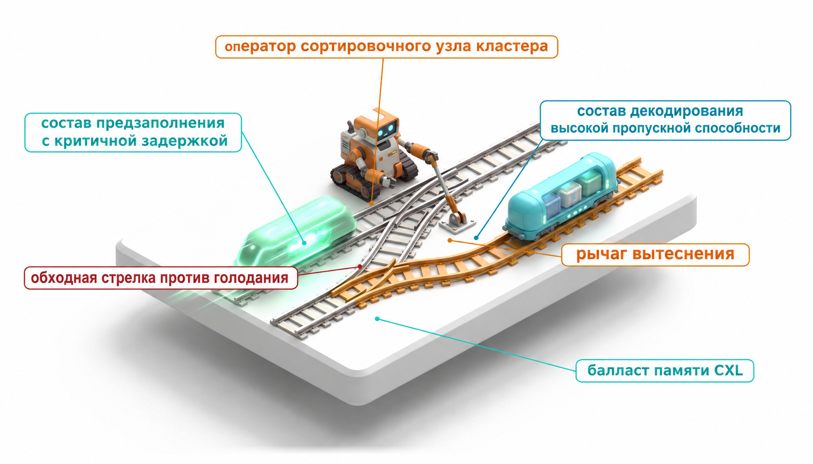
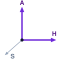
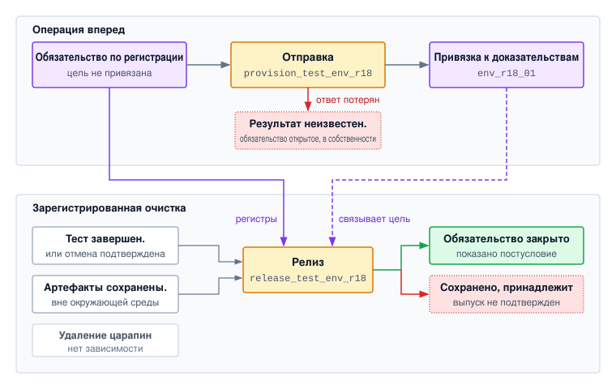
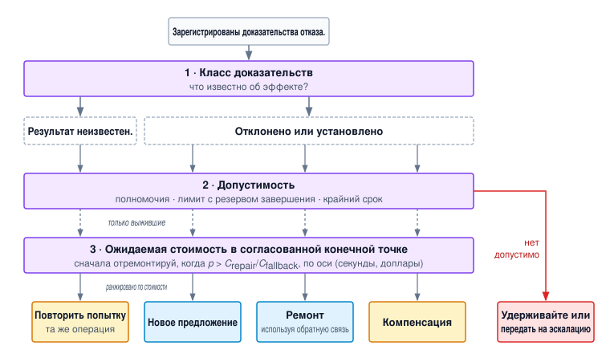
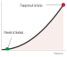
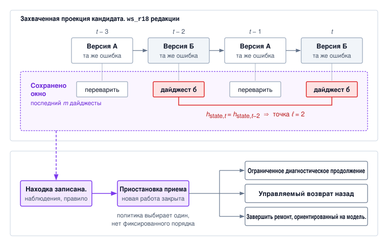
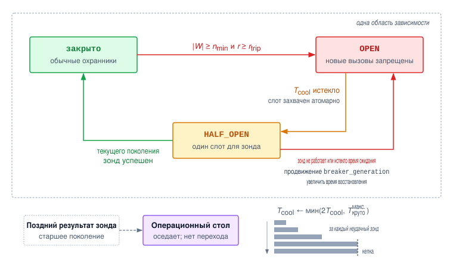
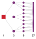
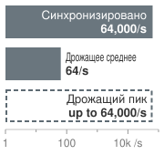

Содержание главы
Содержание
- 12 Восстановление после отказов
- 12.1 Восстановление после частичных эффектов
- 12.2 Эффекты вне общей транзакции
- 12.3 Паттерн «сага траектории»
- 12.4 Восстановление вперёд
- 12.5 Необратимые обязательства
- 12.6 Семантические сторожевые псы
- 12.7 Предохранители инструментов
- 12.8 Локализация инцидентов
- 12.9 Синтез отказоустойчивой системы
- 12.10 Заблуждения и подводные камни
- 12.11 Итоги
- 12.12 Историческая перспектива и дополнительная литература
- 12.13 Упражнения
12 Восстановление после отказов

Цель
Почему агент, записывающий каждый свой шаг, всё же может оставить мир изменённым лишь наполовину?
Прочная запись сообщает перезапущенному агенту, что он намеревался сделать и что наблюдал, но сама запись не меняет мир. Запрос на выделение ресурсов, ответ на который был потерян, мог как создать оплачиваемое окружение, так и не создать ничего — и никакое количество повторов не позволит установить, что именно произошло. Восстановление снапшота рабочей области сбрасывает локальные файлы, тогда как созданное агентом удалённое окружение продолжает работать и продолжает списывать средства. Следовательно, восстановление начинается там, где заканчивается запись, — с решений, принимаемых на неполных данных. Среда исполнения, трактующая тайм-аут как отказ, отправляет второй запрос и может создать вторую «утечку» ресурса, а та, что трактует его как успех, строит дальнейшую работу на эффекте, которого, возможно, никогда не было. Некоторые эффекты можно отменить только новой операцией, которая сама может завершиться отказом, а некоторые нельзя отменить вовсе, поэтому самое дешёвое место для остановки неудачного изменения — до шага, который его фиксирует. Другие отказы не порождают никаких ошибок. Траектория может бесконечно чередовать две правки десятки ходов, при этом каждый вызов возвращает успех и каждая проверка состояния зелёная, а каждый ход отправляет всё более длинный контекст, и счёт растёт быстрее, чем число ходов. Повторы, которые каждый слой разрешает по собственной норме, перемножаются на зависимость, которая уже отказывает, так что один медленный сервис способен остановить общий пул воркеров. Предупреждение в промпте не устраняет ни одну из этих опасностей, поскольку модель может проигнорировать совет, которую ограничение среды исполнения могло бы принудительно обеспечить. Среда исполнения должна регистрировать задолженность по очистке до того, как она совершит действие, и сохранять неизвестные исходы закреплёнными за владельцем, а не додуманными. Она должна сопоставлять ещё одну попытку с раскручиванием по стоимости, которая ещё предстоит, а не по стоимости уже потраченной, и останавливать работу, не приносящую прогресса, на шлюзе, где допускаются новые действия. На длинном горизонте полномочия, которые агент уже реализовал, превращаются в набор обязательств, которые среда исполнения должна исполнить.
Цели обучения
- Выбирать между повтором, ремонтом, компенсацией и эскалацией сначала по состоянию доказательств эффекта, затем по допуску, затем по ожидаемой стоимости
- Регистрировать компенсации до отправки прямого вызова и упорядочивать их исполнение с помощью графа очистки на основе зависимостей
- Сравнивать один ограниченный прямой ремонт с компенсацией и пересозданием — по времени и деньгам — на одной и той же конечной точке
- Анализировать, как проверки, размещённые перед необратимой фиксацией, снижают ожидаемые потери, пока остаются очистка и остаточные обязательства
- Строить детекторы прогресса и оценивать задержку обнаружения против потолка совокупного бюджета
- Проектировать сдерживание зависимостей с единственным владельцем повторов, локальными автоматами отключения и ограниченной долей воркеров
- Проектировать порядок сдерживания инцидента, который ограничивает радиус поражения, сохраняя доказательства и возможности очистки
- Оценивать политики восстановления по принятым задачам, остаточным обязательствам и неразрешённым исходам, а не по локальному статусу
12.1 Восстановление после частичных эффектов

На длинном горизонте полномочия превращаются в проблему восстановления для среды исполнения.
Когда сменяющий воркер берёт на себя провалившийся ремонт пула соединений ремонтного агента (Четыре маяка — рабочие нагрузки), он реконструирует журнал исполнения и восстанавливает снапшот рабочей области-кандидата ws_r18. Уцелевшая история фиксирует намерение запустить test_r18, но не содержит доказательств того, прошёл ли тест, провалился ли он или вообще запускался. Как было показано в Возобновление траектории, воркер не может трактовать отсутствие доказательств как чистый лист; он обязан сохранить эту неопределённость вместе с неразрешённой задолженностью. Реконструкция состояния восстанавливает фактическую основу исполнения, но одни лишь факты не определяют следующий шаг. Политика восстановления среды исполнения должна решить: ждать запоздалых доказательств, попытаться выполнить точечный ремонт снапшота-кандидата или полностью прервать задачу.
Теперь расширим масштаб ремонта, включив в него внешний побочный эффект. Помимо неразрешённого test_r18, который остаётся отдельной операцией, исход которой всё ещё «должен», ремонт выделяет изолированное временное окружение для интеграционных тестов и запускает в нём новый интеграционный набор против ws_r18. Грант авторизации агента покрывает это эфемерное окружение и ничего больше. Развёртывания в продакшене, публичная сетевая маршрутизация, обработка платежей и удаление посторонних облачных ресурсов остаются строго за пределами его полномочий.
Если сетевой тайм-аут или падение процесса приведут к потере ответа о выделении ресурсов, воркер окажется в немедленном тупике: он не может знать, было ли удалённое окружение успешно выделено или никогда не создано.1 Предположим вместо этого, что телеметрия подтверждает создание, но интеграционный набор затем падает. Откат локальной рабочей области к снапшоту ws_r18 сбрасывает внутреннее состояние, однако внешнее окружение остаётся активным, и списания продолжают накапливаться. Локальный откат не отменяет распределённые побочные эффекты. Возврат этих внешних ресурсов требует явной компенсирующей операции очистки, за которой следуют конкретные доказательства того, что операция удовлетворила заявленные постусловия.
Прочные журналы, контрольные точки и детерминированный повтор восстанавливают то, что среда исполнения намеревалась сделать и что она наблюдала. Такая историческая реконструкция даёт доказательства для восстановления, но пассивные журналы не могут изменить внешний мир. Журнал исполнения не сносит осиротевший тестовый кластер, не разрешает потерянное сетевое подтверждение и не оценивает, оправдывает ли последующая попытка свою операционную стоимость.
↩︎ Прочные журналы, контрольные точки и детерминированный повтор устанавливаются в Долговременное исполнение.
Ситуацию дополнительно осложняет то, что отказы агента часто проявляются без выбрасывания исключений времени исполнения. Траектория агента может порождать структурно корректные вызовы инструментов, дрейфуя к деструктивным паттернам: бесконечно чередуя две конфликтующие правки, бомбардируя деградировавший тестовый сервис агрессивными повторами или пытаясь передать приватные учётные данные после разбора недоверенного документа. Каждый сетевой вызов возвращает успешный статус, каждая проверка состояния воркера сообщает «зелёный», но агент либо не двигается вперёд вовсе, либо активно угрожает целостности системы.
Архитектура восстановления регистрирует каждую компенсирующую обязательство очистки до отправки операции, порождающей внешний побочный эффект. Когда операция прерывается, среда исполнения оценивает уцелевшие доказательства вместе с прогнозируемыми прямыми затратами и игнорирует уже понесённые расходы. Затем она выбирает: повторить операцию, выполнить ремонт предложения в пределах границы, запустить компенсирующие действия, раскручивающие внешние побочные эффекты, или передать управление уполномоченному оператору-человеку. Более того, архитектура ограничивает продолжающиеся исполнения даже тогда, когда ни один компонент не выбрасывает явную ошибку. Перехватывая действия на шлюзе допуска, где планируются новые вызовы инструментов, среда исполнения останавливает непродуктивные циклы, дросселирует повторы против насыщенных зависимостей и изолирует подозрительные поведения. Она не полагается на предупреждения в промпте, которые агентная модель могла бы упустить или проигнорировать.
Глава 12.2 демонстрирует, почему сервис окружения и журнал исполнения в этом рабочем процессе не имеют общей границы атомарной фиксации, продолжая из каркаса два правила, которые управляют каждым последующим решением о восстановлении. Глава 12.3 переводит эти инварианты в исполнимый паттерн саги, отслеживая обязательства по компенсации как явные записи, упорядоченные по зависимостям. Там, где исполнение сталкивается с частичным отказом, Глава 12.4 формализует, как оценивать предельные затраты прямого ремонта против обратного раскручивания, а Глава 12.5 управляет критическим переходом через точки необратимой фиксации.
Для борьбы с отказами, возникающими без явных сигналов об ошибке, среда исполнения вводит три границы сдерживания. Сторожевые таймеры прогресса выявляют стагнацию траектории и осциллирующие циклы (Глава 12.6). Управление зависимостями изолирует общие сервисы бэкенда от каскадов повторов (Глава 12.7). Автоматизированные политики карантина изолируют подозрительные инциденты безопасности (Глава 12.8). Наконец, Глава 12.9 объединяет эти контуры управления в рабочий лист восстановления для деградировавшего ремонта пула соединений, описывая тестовый каркас с инъекцией отказов, необходимый для проверки корректности восстановления при реалистичных отказах.
12.2 Эффекты вне общей транзакции
Когда интеграционный набор падает внутри временного тестового окружения, откат локальной базы данных среды исполнения агента не может пересечь сеть, чтобы деаллоцировать удалённую виртуальную машину. Даже если сервис окружения облачного провайдера исполняет внутренние транзакции базы данных со строгими гарантиями ACID, его база данных и журнал исполнения среды исполнения фиксируются в отдельных административных доменах без общей атомарной границы. Внутри одной базы данных или тесно связанного кластера блокирующая транзакция держит эксклюзивные блокировки до фиксации или отката, а двухфазная фиксация координирует атомарное решение между сотрудничающими менеджерами ресурсов (Gray 1981 г.). При двухфазной фиксации каждый участник сначала готовится, записывая состояние восстановления, необходимое, чтобы зафиксировать или откатить по команде, а затем удерживает заблокированные ресурсы в этом подготовленном состоянии, пока координатор не объявит глобальное решение. Агентные рабочие процессы вызова инструментов нарушают оба требования этого протокола. Во-первых, внешние конечные точки, которые агент вызывает, фиксируют каждый запрос по факту получения и редко предоставляют фазу подготовки или принимают среду исполнения агента в качестве своего координатора транзакций. Во-вторых, даже там, где внутренние сервисы сотрудничают, подготовленный участник должен удерживать свои ресурсы заблокированными, пока ожидает координатора, а падение координатора, пока участники подготовлены, продлевает это ожидание до завершения восстановления. Удержание блокировок базы данных или зарезервированной ёмкости на протяжении генерации модели, долгих интеграционных тестов или асинхронного человеческого ревью остановило бы конкурирующую работу на неприемлемые сроки. Поэтому для независимо администрируемых сервисов в этом рабочем процессе восстановление опирается на предварительные операции, явные отмены и идемпотентные обмены, а не на предположение об общей транзакции (Helland 2007 г.).
Когда атомарный откат через независимые границы невозможен, системы должны опираться на компенсацию:2 прямую операцию, которая устанавливает приемлемые постусловия после того, как предшествующий эффект уже зафиксирован. Компенсация не стирает историю и не возвращает вселенную в первозданное до-транзакционное состояние. Например, освобождение размещённого в облаке окружения разработки деаллоцирует его виртуальные вычислительные инстансы и останавливает активные счётчики биллинга. Событие выделения ресурсов, журналы сетевого входа и уже начисленные финансовые списания остаются навсегда, а сам запрос на демонтаж может провалиться из-за недоступной сети. Для структурирования многошаговых рабочих процессов без глобальной изоляции Гарсиа-Молина и Сейлем представили паттерн сага для долгоживущих транзакций (Garcia-Molina и Salem 1987 г.). Вместо трактовки всей траектории как единого атомарного блока сага разбивает исполнение на последовательность меньших, независимо фиксируемых шагов. Она связывает каждый прямой шаг с компенсирующим действием, предназначенным для смягчения его побочных эффектов, если последующий шаг откажет.
↪ Блокирующее поведение двухфазной фиксации и исходная абстракция саги раскрываются в Классический материал о транзакциях.
Компенсация — не единственная стратегия восстановления. Помимо простого повтора операции, чей контракт повтора это допускает, среда исполнения агента выбирает среди трёх семейств ответа:
- Компенсация: исполнять явные противодействующие операции для нейтрализации частичных побочных эффектов.
- Прямой ремонт: сохранять валидные промежуточные артефакты, такие как успешно скомпилированный бинарник или выделенная схема базы данных, и корректировать последующие шаги, а не отбрасывать завершённый прогресс.
- Эскалированная передача: остановить автономную отправку и передать неразрешённые обязательства, активные дескрипторы ресурсов и диагностические журналы уполномоченному оператору-человеку.
Среда исполнения сопоставляет доступные доказательства с прогнозируемыми прямыми затратами, выбирая между этими альтернативами; уже истраченные деньги и время вычислений — невозвратные издержки, которые не должны искажать будущие решения о восстановлении. Какой бы путь она ни выбрала, выбором управляют два правила, которые каркас уже применяет, и именно восстановление — то место, где оба правила проверяются жёстче всего.
Правило расчёта определяет, во что среда исполнения вправе поверить относительно внешнего эффекта. Каркас сформулировал его как правило о таблице операций: отзыв права наблюдения за операцией никогда не завершает операцию расчётом, и только аутентифицированные, коррелированные доказательства это делают. Восстановлению это правило нужно в более острой форме — как три взаимно исключающих состояния доказательств для каждой отправленной операции: установлено, установлено отсутствие или неизвестно. Исход начинается как неизвестный, и только доказательства, коррелированные с конкретной операцией, интерпретированные через контракт целевой конечной точки, могут перевести его в установлено или установлено отсутствие. Потерянное TCP-подтверждение, тайм-аут HTTP-шлюза, асинхронный статус «принято, но в ожидании» или запрос статуса, не вернувший ничего, тогда как исходный запрос может всё ещё быть в пути, — всё это оставляет исход неизвестным. Неизвестный исход сохраняет резерв задолженности против бюджета задачи, хранит прочную запись с именованным владельцем и блокирует любое прямое действие, предполагающее успех или отказ. Среда исполнения может повторить отправку только тогда, когда верифицированный контракт повтора конечной точки делает повторное исполнение безопасным — это расчёт до повтора (принцип «Урегулирование до повтора»).
↩︎ Правило расчёта, отделяющее право наблюдения от расчёта операции, устанавливается в Запись траектории.
Проверка допуска определяет, что среда исполнения может делать дальше. Каждая операция-кандидат проходит те же предикаты, что каркас применяет к обычной работе: будь то прямой прогресс, повтор, ремонт окружения, зонд статуса или действие очистки. Предикаты — это валидные полномочия и одобрение, удовлетворённые зависимости, доступная ёмкость и достаточно времени до дедлайна. Они также требуют резерва, чья ограниченная задолженность вмещается рядом с фактическим потреблением, невыплаченной задолженностью от нерассчитанных операций и защищённым резервом финализации. Проверка заново оценивается на границе отправки непосредственно перед передачей, поэтому план-времени одобрение или более раннее прочное намерение не могут отменить последующий административный холд, отозванный токен или исчерпанный бюджет. Операции восстановления не получают исключений. Однако организационная задолженность за удалённую инфраструктуру переживает цикл рассуждений агента, так что административная очистка, подкреплённая независимыми операционными учётными данными, всё ещё может пройти допуск и демонтировать осиротевшие ресурсы задолго после того, как направляемое моделью продолжение завершилось.
↩︎ Проверка допуска и защищаемый ею резерв финализации устанавливаются в Защиты переходов и проверка допуска.
Наивный стек отмен, такой как перевёрнутый список вызовов инструментов, отображающий создание сервера на удаление сервера, слишком хрупок, чтобы удовлетворить и правило расчёта, и проверку допуска. Операции в полёте отказывают асинхронно, удалённые конечные точки теряют ответы, а частичные записи оставляют внешние ресурсы в состояниях, которые нельзя разрешить повторным исполнением обратных функций с исходными аргументами. Вместо этого среда исполнения должна сохранять структурированное обязательство восстановления до того, как разрешить любому запросу пересечь сетевую границу. Это обязательство захватывает корреляционные идентификаторы, родительско-дочерние причинные связи, снапшоты параметров, пороги тайм-аута и состояние расчёта, предоставляя прочную бухгалтерию, необходимую для обработки частичных отказов без утечки ресурсов. Паттерн траекторной саги формализует эту прочную запись обязательств.
12.3 Паттерн «сага траектории»
Когда исполнитель ремонта отправляет запрос на выделение временной тестовой среды, удалённый сервис может создать виртуальную машину и начать её тарифицировать, даже если сетевой разделение уничтожит ответное подтверждение до того, как оно достигнет среды исполнения. Эта потерянная квитанция ломает бинарное допущение классической саги базы данных, которая координирует долгоживущую транзакцию между независимыми сервисами в расчёте на то, что каждый локальный шаг либо гарантированно фиксируется, либо гарантированно откатывается и сообщает, какой из исходов наступил. В траектории агента среда исполнения может остаться с активным обязательством по очистке для удалённого ресурса, чей назначенный эндпоинтом идентификатор ещё не дошёл. Поэтому сага для вызовов инструментов агента не может просто регистрировать завершённые шаги после их возврата; она должна надёжно регистрировать каждое обязательство по восстановлению до отправки и явно отслеживать то, чего среда исполнения пока не знает.
Определение 12.1: Сага траектории
Сага траектории — паттерн восстановления, который надёжно записывает составляющие действия инструментов и координирует компенсирующие действия, когда установленные внешние эффекты должны быть устранены, при этом явно сохраняя неразрешённые исходы и зависимости между действиями.
- Значимость: обеспечивает систематическое восстановление между независимыми внешними инструментами и сервисами, не имеющими общей границы распределённой транзакции.
- Отличие: компенсация представляет собой новое прямое исполнение, порождающее собственный наблюдаемый исход, а не атомарный откат или физическое обращение состояния среды.
- Типичная ошибка: откладывать регистрацию очистки до получения успешного прямого ответа, создавая окно сбоя, в котором внешние ресурсы утекают без какой-либо надёжной записи об обязательстве их восстановления.
В классической формулировке сага состоит из последовательности независимо фиксируемых прямых шагов
где
12.3.1 Регистрация обязательств
Регистрация компенсирующего шага до отправки прямого действия порождает немедленную проблему адресации: когда исполнитель отправляет запрос на выделение среды, облачный сервис ещё не создал среду и не вернул дескриптор, необходимый для её удаления. Если ждать прихода ответа, чтобы записать очистку в журнал, откроется окно сбоя, в котором разорванное соединение оставит живую тарифицируемую среду без локальной записи для восстановления; вместо этого среда исполнения надёжно регистрирует шаблон очистки до прямой отправки и связывает целевой идентификатор при поступлении подтверждения. В нашем рабочем процессе временной тестовой инфраструктуры пусть provision_test_env_r18 — стабильная логическая операция, выделяющая изолированную тестовую среду, а release_test_env_r18 — соответствующая ей операция очистки, отдельная логическая сущность, стабильная при повторах и перезапусках. Ни одну из этих сущностей не следует путать с идентификатором среды, сгенерированным эндпоинтом. Этот системный дескриптор, в успешной сессии выделения обозначенный env_r18_01, становится известным среде исполнения только после того, как коррелированные доказательства ответа урегулируют прямую операцию.
Предварительный шаблон очистки записывает точное прямое действие и полезную нагрузку, авторизованный объём полномочий, предусловия исполнения, зависимости и явное правило связывания возвращённого идентификатора среды с момента его поступления. Будучи дописанной непосредственно в журнал упреждающей записи рядом с записью о допуске прямого действия, эта регистрация разделяет подтверждение хранения и резервирование ресурсов прямой попытки, избегая накладных расходов и сложности независимого автомата состояний. Регистрация очистки до порождающего её эффекта применяет принцип «намерение прежде эффекта» (принцип «Намерение до эффекта») к самому обязательству по восстановлению.
↩︎ Надёжная запись намерения, создаваемая до отправки, определена в Долговременный intent до диспетчеризации.
Результирующий шаблон связывает очистку с конкретной средой, созданной этой операцией выделения, а не полагается на переходные метаданные вроде отображаемых имён. Надёжная регистрация этого шаблона устанавливает связывающее обязательство для будущего восстановления, а не утверждает, что ресурс уже существует. Таблица 1 демонстрирует это различие на каждой фазе границы сбоя.
| Boundary | Durable obligation and available evidence | Permitted interpretation |
|---|---|---|
| Before provisioning dispatch | provision_test_env_r18, точный запрос и область действия, допуск и резервирование, а также шаблон для release_test_env_r18 с незаданным полем среды |
Освобождение ресурсов запланировано; идентификатор созданного ресурса и результат его выделения ещё не подтверждены |
| Provisioning intent survives, but its result does not | The same obligation and unresolved forward attempt | Запрос может ожидать, исполняться или быть завершённым; отсутствие свидетельств не разрешает повторное создание и не подтверждает освобождение ресурсов |
| Adequate correlated provisioning evidence arrives | The evidence binds env_r18_01 to provision_test_env_r18; the binding is durably recorded |
Освобождение этого ресурса допустимо, если соблюдены его зависимости и предусловия и пройдена проверка допуска |
| Cleanup is dispatched | Отдельное допущенное намерение для release_test_env_r18, с собственными идентификатором попытки, полезной нагрузкой, резервированием и правилами повторения |
Освобождение ресурсов выполняется или его результат не установлен; отправка запроса не подтверждает освобождение |
| Adequate cleanup evidence arrives | Зафиксированные свидетельства подтверждают заявленное постусловие либо указывают оставшуюся работу и её ответственного исполнителя | Закрывайте только подтверждённую часть обязательства; явно сохраняйте сведения о неподтверждённых или частичных результатах |
Когда подтверждение теряется после отправки, идемпотентный зонд восстановления результата может добыть недостающий исход. Для изменяющего инструмента без дедупликации на стороне эндпоинта это тот самый зонд, который контракт инструмента из Уравнение (1) поставляет рядом с процедурами actuate и compensate. Зарегистрированный здесь шаблон инстанцирует процедуру compensate этого контракта для одного конкретного связанного ресурса. Если зондирование не поддерживается или не даёт результата, правила урегулирования требуют, чтобы операция оставалась открытой с назначенным владельцем восстановления. Наивная среда исполнения могла бы опросить внешний сервис, обнаружить отсутствие среды и преждевременно закрыть запись об очистке в предположении, что создание провалилось. Это порождает гонку: если исходный запрос на выделение просто задержался в пути, удалённый сервис может создать среду несколькими секундами позже, оставив осиротевший ресурс, который бесконечно наращивает расходы на вычисления без какого-либо управляющего процесса. Если эндпоинт поддерживает явную отмену запросов, среда исполнения может вызвать этот контракт, чтобы прервать незавершённое создание, при условии, что эндпоинт гарантирует, что отменённые запросы не вступят в силу далее по цепочке.
↪ Восстановление результата, в отличие от повторного исполнения, раскрыто в Повторы и восстановление результатов.
12.3.2 Семантическая компенсация
Когда env_r18_01 связан и неудавшийся интеграционный запуск инициирует release_test_env_r18, среда исполнения должна проверить, что разборка прошла успешно, хотя внешний мир нельзя вернуть в состояние до выделения среды. Вместо проверки невозможного физического обращения среда исполнения проверяет, восстановила ли компенсирующее действие заявленный набор постусловий, оставив внешние побочные эффекты их собственным жизненным циклам.
Определение 12.2: Семантическая компенсация
Семантическая компенсация — независимое прямое действие, предназначенное для установления заявленных прикладных постусловий после более раннего побочного эффекта, без претензии на стирание истории исполнения или восстановление всех измерений внешней среды.
- Значимость: даёт проверяемую, контролируемую цель для восстановления, когда точное физическое или историческое обращение невозможно.
- Отличие: освобождение временной среды прекращает её активное выделение; она не отзывает отправленные сетевые пакеты, не стирает системные журналы аудита и не возвращает потреблённые расходы на вычисления.
- Типичная ошибка: считать асинхронный ответ эндпоинта о приёме доказательством достижения заявленных постусловий, когда произошло лишь получение запроса.
В нашем сквозном примере контракт компенсации оговаривает, что принадлежащая задаче среда больше не должна быть выделена и что ни один активный интеграционный тест не может от неё зависеть, причём все диагностические артефакты должны быть перенесены в надёжное хранилище до освобождения. Контракт также определяет, какие доказательства должен предоставить эндпоинт для демонстрации успешного освобождения. Поскольку финальные начисления по счетам часто урегулируются асинхронно спустя часы после разборки среды, среда исполнения отделяет обязательство по физическому ресурсу от финансового урегулирования.
Формально пусть
Здесь предикаты «среда выделена» и «допущенный тест от неё зависит» принадлежат
Компенсация неизбежно работает в среде, которая уже изменилась. Внешние сервисы или операторы могли наблюдать промежуточное состояние, потреблённые секунды вычислений нельзя разтарифицировать, а параллельные процессы могут изменить предусловия очистки. Например, если смежный процесс подключился к временной среде для совместной отладки, исходный агент не может в одностороннем порядке уничтожить ресурс только потому, что его собственный план остановился. Граница управления допуском среды исполнения должна проверять актуальные графы владения и активных зависимостей в момент компенсации, а не вслепую следовать устаревшему тексту плана.
Восстановление локального рабочего пространства играет дополнительную, но более узкую роль. Совместимая контрольная точка восстанавливает только проекцию локального рабочего пространства, управляемую непосредственно средой исполнения. Контрольные точки не могут сбросить удалённые облачные среды, работающие внешние демоны, отправленные батч-задачи или накопленные платежи за сервисы. Эти внешние побочные эффекты требуют семантической компенсации. Когда восстановление требует и локального отката, и удалённой компенсации, среда исполнения оркестрирует оба механизма, проверяя независимый исход каждого пути, прежде чем объявить систему восстановленной.
↩︎ Восстановление контрольной точки, восстанавливающее запись и рабочее пространство без повторного исполнения внешних действий, определено в Согласованные границы восстановления.
12.3.3 Отказы очистки
Поскольку действия очистки пересекают те же границы внешних инструментов, что и прямые действия, они встречают те же режимы отказов: обрывы сети, лимиты частоты и недоступность удалённых сервисов. Следовательно, каждая компенсирующая операция должна проходить контроль допуска, и её намерение должно быть надёжно зафиксировано до отправки. При повторе неудавшегося вызова очистки среда исполнения присваивает каждой транспортной попытке уникальный идентификатор попытки, тогда как release_test_env_r18 продолжает обозначать постоянную логическую операцию. Повторы подчиняются повторному контракту эндпоинта. Стабильный логический ключ гарантирует, что дублирующие запросы на удаление исполняются безопасно, не целясь в другой ресурс, если внешняя система переиспользует имена или идентификаторы.
↩︎ Стабильные идентификаторы операций, с новым идентификатором попытки для каждого повтора в рамках повторного контракта эндпоинта, определены в Идентичность операций и контракты конечных точек.
Координатор закрывает запись компенсации только по получении проверяемого доказательства исхода, а не считая успех из того факта, что удалённый вызов вернулся без транспортной ошибки. Если вызов освобождения прервался по тайм-ауту, остаются возможными три состояния: среда может исчезнуть, может ещё разбираться или остаться выделенной. Правила урегулирования держат все три возможности открытыми. Более того, действия очистки расходуют квоту и бюджет реального (wall-clock) времени; вызов, прерванный по тайм-ауту, ничего не возвращает. Если очистка не может продвинуться дальше в рамках выделенного бюджета, обязательство остаётся на записи с накопленными доказательствами и назначенным владельцем эскалации. Таким образом, неудавшаяся траектория агента может завершиться безопасно, не маскируя неразрешённые внешние утечки.
Предварительно зарегистрированные шаблоны очистки исполняются под надзором доверенного координатора среды исполнения без вызова очередного шага инференса модели. Это разделение обеспечивает контроль по принципу минимальных полномочий: даже если полномочия модели на прямое исполнение отозваны после аномалии или исчерпания бюджета, узкосфокусированный грант на очистку остаётся доступным координатору для разборки выделенных ресурсов. Если восстановление требует операций за пределами этого предварительно авторизованного гранта, среда исполнения не угадывает: она останавливается и выпускает явно атрибутированную передачу владения. Позднейшие аутентифицированные доказательства или ручные действия оператора могут урегулировать обязательство без перезапуска устаревшей траектории агента.
12.3.4 Граф очистки
Разборка env_r18_01 в момент обнаружения отказа разорвала бы интеграционный тест, всё ещё выполняющийся внутри неё, и уничтожила бы диагностические журналы до их копирования в надёжное хранилище, тогда как удаление несвязанного локального временного каталога не обязано ждать ни того, ни другого. Простая стековая размотка в порядке «последним пришёл — первым вышел» (LIFO) достаточна лишь тогда, когда агент исполняет строго линейную последовательность и каждое предусловие очистки следует этому обратному порядку. Когда агент вызывает инструменты конкурентно, запускает асинхронные фоновые задачи или ветвится по спекулятивным планам, восстановление требует отслеживания явных причинных зависимостей в направленном графе очистки
означает, что компенсирующая операция
В нашем сценарии временной среды подтверждение остановки тестового процесса (или его отмена с проверкой завершения) и сохранение диагностических артефактов теста вне песочницы — оба являются предшественниками release_test_env_r18 в

provision_test_env_r18 и связывает env_r18_01 только при поступлении коррелированных доказательств; потерянный ответ оставляет обязательство открытым с назначенным владельцем вместо угадывания цели. Пунктирная связь показывает, что связывание поставляет цель для зарегистрированной очистки. В ветви очистки release_test_env_r18 ожидает своих предшественников, а его собственный исход либо закрывает обязательство, либо оставляет его закреплённым за владельцем, так что ни один путь не заканчивается предположительно чистым состоянием.
Структурирование очистки в виде DAG изолирует отказы и позволяет распускать эффекты параллельно. Неразрешённый или завершившийся неудачей узел очистки блокирует только свои транзитивные зависимые узлы в
Граф очистки обеспечивает порядок, не стирая историческую ответственность. Завершённые узлы сохраняют свои доказательства верификации, а узлы, завершившиеся неудачей или находящиеся в неоднозначном состоянии, остаются привязанными к назначенным владельцам. Хотя авторизованный администратор может сознательно принять остаточный риск, чтобы разблокировать выполнение downstream-операций, система никогда не молча записывает неподтверждённое освобождение как чистое.
12.3.5 Компенсация в области ветки
Если агент создаёт облачную тестовую песочницу в общем префиксе траектории, прежде чем ветвиться на три кандидата тестовых конфигураций, снос этой песочницы при неудаче кандидата B саботирует активные эксперименты в кандидатах A и C. При поиске по дереву или исследовании нескольких кандидатов происхождение ветки отслеживает, где расходилось выполнение модели, но ничего не говорит о том, какие внешние ресурсы всё ещё занимает каждая ветка.
Поэтому среда исполнения отделяет владение ресурсами от логической истории ветвей, отслеживая эффекты и обязательства по очистке через графы зависимостей со ссылочным подсчётом. Когда среда исполнения отказывается от спекулятивной ветки, она возвращает только те ресурсы, которыми эта ветка владеет исключительно, — и лишь после того, как её незавершённая работа завершилась или корректно остановлена. Общие ресурсы остаются выделенными, пока все оставшиеся зависимости не разрешат их освобождение. Более того, если отклонённая ветка отправила запрос на выделение ресурсов, исход которого остаётся неизвестным, этот запрос остаётся записанным в таблице долговременных операций; удаление ветки из планировщика не стирает неразрешённое внешнее обязательство.
Восстановление локального рабочего пространства или контекстного окна ветки не откатывает внешнюю среду к точке ветвления, и доказательства, собранные в рамках отклонённого кандидата, нельзя считать валидными для соседней ветки лишь на том основании, что у них общий предок. При контрфактическом выполнении локальные рабочие пространства могут быть откатаны к более ранним контрольным точкам, но внешние сети, базы данных и счётчики биллинга — нет. Соблюдение этого различия гарантирует, что отсечение спекулятивных ветвей никогда не отбрасывает молча внешние обязанности по восстановлению.
↩︎ Контрфактические ветки, которые воспроизводят записанный префикс и затем требуют свежих наблюдений, вводятся в Контрфактические ветви.
Контрольная точка 12.1: Обязательства компенсации и область зависимостей
Компенсация регистрируется перед отправкой и завершается доказательствами после факта. Каждый промпт возлагает обязательство на одну из сторон этой границы.
Хотя семантическая компенсация систематически устраняет частичные эффекты, распуск внешних работ — не всегда правильная реакция на отказ. Когда предыдущие шаги уже создали работоспособное, пригодное для повторного использования состояние, а последующий шаг терпит неудачу, не успев его затронуть, снос этих ресурсов тратит время и бюджет, которые могло бы сохранить ограниченное исправление на месте. Решение о том, распускать или чинить на месте, требует сопоставления ожидаемой стоимости исправления вперёд с расходами на распуск назад и повторное построение.
12.4 Восстановление вперёд
Возьмём ветку, в которой доказательства выделения ресурсов всё же пришли. Отдельно авторизованная операция provision_test_env_r18 завершилась, привязав временную среду интеграционных тестов env_r18_01. Перед отправкой интеграционного теста среда исполнения проверяет предложенную тестовую конфигурацию и отклоняет её, потому что поле, требующее целого числа, содержит строку. Рабочее пространство кандидата остаётся ws_r18, и ни один интеграционный тест не начался. Освобождение среды через release_test_env_r18 отбросило бы дорогую, полностью работоспособную подготовку. Напротив, ограниченное исправление конфигурации может восстановить готовность без перестроения среды с нуля.
Эта ситуация отличается от неразрешённого намерения test_r18, которое восстановил замещающий worker. Когда среда исполнения отклоняет предложение до отправки, устанавливается определённое доказательство того, что исполнитель никогда не запускал действие. Отсутствующий результат по правилу завершения такого заверения не даёт: операция могла выполниться успешно, провалиться или застрять на полпути.
В проектировании надёжных систем восстановление вперёд изменяет текущее состояние или исправляет предложенное действие, чтобы восстановить допустимый путь к завершению задачи. Напротив, восстановление назад возвращает систему к более раннему сохранённому состоянию. Классическая таксономия надёжности формализует эти стратегии как rollforward и rollback, где rollback восстанавливает ранее зафиксированную контрольную точку (Avizienis и др. 2004 г.).3 Восстановление вперёд (forward repair) — названное ранее семейство реакций — представляет собой форму восстановления вперёд в каркасе агента: оно сохраняет валидные промежуточные артефакты и исправляет отклонённое предложение. В агентной системе восстановление контрольной точки рабочего пространства выполняет восстановление назад для локального состояния файловой системы и памяти, которое охватывает контрольная точка. Внешние системы, однако, редко поддерживают настоящий rollback, и компенсация стоит на границе. По намерению это восстановление назад, поскольку она возвращает среду к предэффектным предикатам Уравнение 2. По исполнению это восстановление вперёд — новая операция с собственным исходом, почему определение саги траектории и называет её новым прямым выполнением. Она достигает семантической эквивалентности, а не физического восстановления.
12.4.1 Действия восстановления и доказательства
Трактовка каждого отказа как общего предписания «попробовать снова» либо повторяет неидемпотентный вызов выделения ресурсов после неоднозначного таймаута, либо сносит работоспособную тестовую среду env_r18_01, когда неверный тип имело лишь локальное поле конфигурации. Разделение «попробовать снова» по доказательствам, которые оставляет каждый отказ, даёт пять различных вариантов, поскольку восстановление вперёд распадается на две формы, тогда как повтор, компенсация и эскалация остаются по одной. Транспортный повтор повторяет ту же логическую операцию в рамках установленного контракта повтора. Восстановление вперёд принимает две формы: повторная выборка запрашивает совершенно новое предложение-кандидат у модели, а исправление на основе обратной связи (Madaan и др. 2023 г.; Shinn и др. 2023 г.) снабжает промпт адресной диагностикой для получения пересмотренного предложения. Компенсация выполняет зарегистрированные действия для установления резервных постусловий, а эскалация передаёт полномочия по решению или неразрешённые обязательства авторизованному супервизору. Таблица 2 разделяет эти варианты по требуемым доказательствам и обязательствам, остающимся на среде исполнения.
| Вариант | Подходящее основание | Оставшееся обязательство |
|---|---|---|
| Повтор существующей операции | Контракт повтора и текущие доказательства позволяют ещё одну транспортную попытку | Сохранить логическую идентичность, возможные предыдущие эффекты и расходы |
| Сгенерировать новое предложение | Задача ещё допускает другого кандидата, и среда исполнения может отличить его от уже принятой работы | Проверить полное предложение; новая выборка — не восстановленный результат |
| Исправить с помощью обратной связи | Адресная диагностика предполагает разрешённое изменение действия или его предусловий | Снова пройти контроль допуска; верифицировать исправленный исход |
| Компенсировать | Зарегистрированные действия восстановления остаются применимыми к установленным эффектам | Соблюдать порядок зависимостей и верифицировать постусловия или сохранять остаточные обязанности |
| Приостановить или эскалировать | Допустимого автоматического пути не осталось | Назвать владельца решения или завершения; не отбрасывать ожидающую работу |
Сетевой таймаут поднимает вопрос о статусе эффекта прежде, чем можно будет заняться вопросом исправления модели, и среда исполнения опирается на правило завершения, чтобы определить, было ли изменено внешнее состояние. Аналогично, ответ HTTP 429 с ограничением частоты доказывает лишь то, что гарантирует контракт внешнего сервиса; он не доказывает, что попытка изменения состояния была отклонена до выполнения. Экспоненциальная задержка регулирует момент и пропускную способность разрешённого повтора, но никакой график задержек не может превратить небезопасный неидемпотентный повтор в безопасную операцию.
В отличие от неоднозначного таймаута, отклонение конфигурации до отправки даёт хорошо определённое основание для исправления. Поскольку валидатор схемы отклонил полезную нагрузку локально, среда исполнения устанавливает, что предложенное действие никогда не достигло исполнителя и не изменило удалённое состояние. Поэтому среда исполнения может предоставить исходный запрос, целевую схему, диагностику на уровне полей и область задачи в рамках ограниченного промпта исправления, проверяя пересмотренное предложение до допуска любого побочного эффекта. Если же исправление меняет исходный код, а не эфемерную тестовую конфигурацию, изменённый артефакт представляет собой новую ревизию кандидата, требующую свежих тестовых доказательств; предыдущие успешные тесты для ws_r18 не могут сертифицировать изменённый код.
↩︎ Структурированная ограниченная диагностика отклонений вводится в Диагностика отклонений.
Предоставление обратной связи изменяет промпт-условие модели, не расширяя её полномочий на выполнение. Хотя независимые повторные выборки из фиксированного промпта дают одну и ту же вероятность успеха при каждой попытке, повторные неудачи в эксплуатационных агентах редко бывают независимыми. Вместо этого повторные неудачи обычно вскрывают внутренне трудную задачу, устойчивое неверное понимание промпта или неожиданное состояние среды. Эмпирическая вероятность успеха исправления
↩︎ Ось обратной связи, введённая в Исправление по наблюдениям вдоль оси обратной связи, разделяет обратную связь, добавляющую внешнее наблюдение, и просьбу к модели заново рассмотреть собственный вывод.
Накопление неудачных ответов и диагностических трасс через последовательные попытки также раздувает промпт для последующих вызовов. Среды исполнения должны управлять двумя различными ресурсными границами: ёмкостью контекстного окна на один вызов и накопленным счётчиком токенов задачи. Сборка контекста должна уместить релевантные диагностические доказательства в пределах контекстного лимита одного вызова, тогда как биллинговый счётчик списывает токены за весь ввод и вывод по полной последовательности вызовов исправления. Хотя сжатие контекста может суммировать исторические попытки, чтобы уложиться в контекстное окно, сжатие расходует дополнительные вызовы модели, добавляет задержку и отбрасывает детальную диагностику. Ноутбук 12.3 в Глава 12.6.2 оценивает, сколько стоит добавление обратной связи ход за ходом при конкретной рабочей нагрузке.
12.4.2 Допустимость и ожидаемая стоимость
Вызов исправления, недорогой в среднем, всё же может в худшем случае выйти за пределы оставшегося долларового потолка задачи или попытаться обойти истёкшую выдачу полномочий. Перед оценкой экономических компромиссов восстановления среда исполнения поэтому отсекает любое действие-кандидат, не прошедшее контроль допуска. Например, отказ аутентификации никогда не даёт полномочий на синтез несанкционированного обхода; вместо этого среда исполнения должна либо запросить авторизованное обновление учётных данных, либо найти разрешённую резервную операцию, либо приостановить выполнение и эскалировать. Финансовые, задержечные и контекстные лимиты задают жёсткие потолки: среда исполнения допускает кандидат исправления, только если его максимальная ограниченная ответственность укладывается в оставшиеся бюджет и дедлайн, а собранный контекст исправления — в ёмкость контекста целевой модели.
↩︎ Допуск с ограниченной ответственностью, который принимает операцию только когда её максимальный расход укладывается в оставшуюся норму, вводится в Резервирование и расчёт.
Ожидаемая стоимость направляет политику восстановления только среди действий-кандидатов, прошедших допуск. Исторические расходы — это невозвратные затраты; решения о восстановлении должны зависеть строго от перспективных издержек и рисков: стоимости сохранения полезного состояния, его перестроения с нуля, попытки исправления и управления вторичным отказом. Хотя дорогая предыдущая подготовка часто означает дорогое восстановление, одни лишь прошлые траты никогда не оправдывают продолжение по пути к провалу. Текущие платежи за удержание ресурсов, небезопасные остаточные побочные эффекты или истечение дедлайна задачи часто диктуют, что отбросить частично выполненную работу предпочтительнее, чем пытаться её исправить.
12.4.3 Исправление против перестроения
Когда env_r18_01 уже работает и лишь тестовая конфигурация провалила локальную валидацию, снос и перестроение среды впустую тратит каждую секунду, потраченную на её выделение. Но потратить ход на исправление с низкой вероятностью успеха — значит потратить токены и всё равно заплатить за перестроение, если исправление провалится. Чтобы сравнить попытку ограниченного исправления с немедленным выполнением резервного пути, который распускает и перестраивает требуемое состояние, пусть
Для любой строго положительной стоимости резерва попытка исправления вперёд даёт меньшую ожидаемую стоимость, чем немедленный откат, всякий раз, когда
Инженеры должны оценивать это сравнение независимо для задержки (в секундах) и денежных расходов (в модельных долларах), поскольку их соответствующие пороги безубыточности

Инженерный расчёт 12.1: Восстановление против отката при сопоставимой готовности
ws_r18, возможно в другой среде после восстановления.
Переменные: все входные данные гипотетические, а предыдущие операции уже завершены, поэтому неизвестный запрос на выделение ресурсов не повторяется. Немедленная компенсация занимает 40.6 s; восстановление, включая получение и валидацию пригодной конфигурации, занимает 46 s. Восстановление использует 38,500 входных и 3,100 выходных токенов по цене $3 и $15 за миллион соответственно. Компенсаторы не используют модельные токены.
Изолированный вызов восстановления получает 2,390 токенов во всём запросе, включая инструкции, объём работ, неудавшуюся конфигурацию и диагностику; никакая более ранняя беседа не подставляется незаметно. Он порождает 180 выходных токенов. Предположим 0.09 s предвыходной обработки для этого короткого запроса — она исключает ожидание в очереди и потому не является измеренным временем до первого токена, затем 50 токенов/с, после чего 0.4 s локальной валидации при любом исходе. Локальное восстановление не имеет внешних эффектов; при неудаче его закрытая кандидатская конфигурация отбрасывается, и исходный резервный путь остаётся доступным по неизменной цене. Успех означает, что указанные проверки готовности прошли. Доллары покрывают только модельные токены, а время не включает ожидание в очереди и новые простои.
Математика: резервный путь занимает
Результат: восстановление в первую очередь оправдано по обеим осям всякий раз, когда успешна хотя бы одна попытка из 16, а при предполагаемой вероятности оно сокращает ожидаемое время до готовности на 45.3 percent.
Системный вывод: стоимость резервного пути
12.4.4 Эпизод восстановления
Даже когда одна попытка восстановления достаточно дешева, чтобы пробовать её первой, разрешение агенту повторять неудачную конфигурацию без ограничения или сбрасывать счётчик попыток переименованием шага превращает ограниченное исправление в бесконечный цикл. Среда исполнения агента не может заранее знать, исправим ли данный отказ, поэтому она группирует корректирующие попытки в ограниченный эпизод восстановления.5 Каждый эпизод поддерживает уникальную идентичность, фиксирует задачу и версии кандидатов, которыми он управляет, и отслеживает счётчик попыток против явного лимита — cap-а восстановления
Поскольку лимит попыток является операционным параметром политики, его исчерпание не доказывает неразрешимость исходной задачи. Кумулятивный финансовый бюджет задачи и невыполненные обязательства переносятся через любой пересмотренный план или переименованную операцию. Только авторизованная модификация политики может инициировать новый эпизод восстановления, и этот новый эпизод наследует всю предыдущую телеметрию и потреблённые ресурсы.
Наблюдение повторяющихся ошибок или одинаковых состояний кандидатов оправдывает раннюю инспекцию со стороны среды исполнения, но само по себе повторение не является окончательным доказательством отсутствия прогресса. Неизменная диагностика ошибки может следовать за ценной внутренней обрезкой контекста, а возврат к более раннему состоянию может представлять собой намеренный поиск с откатом. Глава 12.6 формализует выделенные механизмы сторожевых таймеров для обнаружения таких остановок. Когда лимит эпизода исчерпан или проверка допуска не проходит, среда исполнения запрещает дальнейшие попытки восстановления и выбирает среди всё ещё разрешённых вариантов: компенсацию, приостановленное продолжение в ожидании инспекции оператором или явную эскалацию.
Контрольная точка 12.2: Выбрать и ограничить восстановление
Дисциплинированная стратегия восстановления сначала оценивает класс свидетельств, затем проверяет ограничения допуска и лишь в последнюю очередь оптимизирует ожидаемую стоимость.
Анализ безубыточности в Глава 12.4.3 предполагал, что компенсация остаётся доступным резервным путём на протяжении всего восстановления. Однако некоторые внешние обязательства необратимо изменяют внешнее состояние, навсегда закрывая путь компенсации и требуя иных гарантий безопасности.
12.5 Необратимые обязательства
Когда агент покидает находящуюся в процессе выполнения задачу восстановления, освобождение временной среды интеграционного теста env_r18_01 освобождает её виртуальную инфраструктуру, оставляя лишь накопленные вычислительные расходы. Публикация программного пакета во внешний реестр или раскатка изменения конфигурации по действующему производственному парку пересекают иную границу, поскольку никакое действие в рамках полномочий агента не может вернуть уже скачанные артефакты или отменить отклонённые запросы клиентов. Поэтому свойство обратимости всегда относительно указанной подсистемы и явной границы контроля: локальный снапшот файловой системы восстанавливает отслеживаемые им каталоги и ничего за их пределами, а удаление облачных ресурсов прекращает будущие списания, не стирая прошлых логов.
12.5.1 Контракты восстановления
Среда исполнения не может вывести способ отмены действия из имени эндпоинта или его грубого уровня полномочий: изменение конфигурации, которое можно откатить восстановлением снапшота в локальном рабочем пространстве, требует явного компенсирующего вызова в тестовой среде (staging) и становится невозвратным после публикации в живой клиентский трафик. Поэтому перед инициированием любого изменения состояния среда исполнения должна определить три свойства каждого предлагаемого эффекта: точное целевое состояние, доступное при данных полномочиях задачи действие восстановления и конкретные свидетельства, необходимые для проверки постусловия восстановления. Таблица 3 различает три операционных контракта восстановления. Эти контракты представляют собой внутренние семантические свойства лежащей в основе операции, а не поверхностные имена эндпоинтов или грубые уровни полномочий
| Контракт восстановления | Требуемая граница | Остаточные эффекты |
|---|---|---|
| Восстановить выбранное состояние | Доступное предыдущее состояние и контроль над затронутыми объектами и конфликтующими писателями | Списания, внешние наблюдения и другие эффекты вне этого состояния остаются |
| Компенсировать известный эффект | Авторизованное корректирующее действие с явными постусловиями применения и совместимыми текущими зависимостями | История и прочий заявленный остаток остаются; сама компенсация может провалиться |
| Управлять обязательством, которое нельзя отменить в рамках объёма | Явное принятие невосстановимого эффекта и план верификации, последующих действий и эскалации | Принятый эффект остаётся, даже если последующая работа провалится |
Снос временной тестовой среды находится ровно во второй строке. Освобождение экземпляра среды env_r18_01 освобождает его вычислительные ресурсы, но ранняя история исполнения и биллинговые списания навсегда остаются в записи. Когда же рабочий процесс включает действие из третьей строки — такое, которое ни одна операция в рамках полномочий агента не может отменить, — среда исполнения больше не может полагаться на компенсацию постфактум и должна организовать план вокруг точки невозврата.
12.5.2 Регион обязательства
Предположим, авторизованный агент публикации сначала размещает артефакт во внешнем реестре пакетов, а затем проверяет его криптографическую подпись и версии зависимостей. Когда проверка подписи проваливается, дефектный пакет уже публично виден во внешних зеркалах, и никакое действие в рамках полномочий агента не может отозвать копии, которые пользователи ниже по потоку уже скачали. Поэтому необратимое действие из третьей строки Таблица 3 требует явной архитектурной структуры, поскольку планировщик восстановления должен организовать окружающую подготовку и верификацию вокруг него.6
Определение 12.3: Пивотное действие
Пивотное действие — это назначенное необратимое обязательство внутри ограниченного региона плана, после которого восстановление предобязательственного состояния региона перестаёт быть доступной стратегией восстановления.
- Значимость: пивот делит регион плана на две различные фазы: компенсируемую фазу подготовки до него и необратимую фазу после него. Перенос проверок валидации до пивота — основной системный механизм предотвращения превращения дефектных действий в непоправимый ущерб.
- Различие: быть пивотом — архитектурное свойство действия внутри региона плана при конкретном предоставлении полномочий, а не внутренний атрибут имени эндпоинта API. Один и тот же вызов API может быть компенсируемым под административной ролью с привилегиями отката, но действовать как пивот при ограниченном операционном предоставлении.
- Типичная ошибка: откладывание проверок до момента после пивота, когда они могли быть выполнены до него. Позднее исполнение валидации превращает отказы, которые компенсация могла бы аккуратно разрешить, в принятые производственные простои.
Регион обязательства охватывает промежуток плана исполнения, структурированный вокруг единственного пивота: подготовительную работу, которую компенсация всё ещё может откатить, само пивотное действие и остающиеся после него последующие обязательства. Регионы обязательства проносят намерение до эффекта (принцип «Намерение до эффекта») через шаг, до которого компенсация не может добраться. Всё, что среда исполнения должна проверить и зафиксировать, разрешается до необратимого действия.
Внутри каждого региона обязательства агент должен выполнить все проверки валидации, которые легитимно могут предшествовать обязательству, до выпуска необратимого действия. Среда исполнения должна сохранить все необходимые артефакты, валидировать их версии и зависимости, а также записать авторизованное намерение, резервирования ресурсов, метаданные восстановления и последующие обязательства в долговременное хранилище согласно контракту домена отказа из Подтверждение и домен отказов. Только после пересечения этой долговременной границы пивотное действие проходит финальную проверку допуска в момент диспетчеризации.
Ограничение каждого региона единственным пивотом — архитектурная дисциплина, а не ограничение, требующее, чтобы вся траектория задачи содержала лишь одно необратимое действие. Когда сложная рабочая нагрузка требует нескольких независимых изменений состояния, план декомпозируется в последовательность отдельных регионов обязательства.
В этом рабочем процессе публикации предположим, что агент должен и выпустить одобренный артефакт во внешний реестр, и уведомить получателей ниже по потоку. Наивный план сначала публикует артефакт, затем проверяет подписи и версии зависимостей, третьим шагом составляет заметки о релизе и четвёртым отправляет уведомления, подвергая публичный реестр любому дефекту, который поймает шаг 2. Таблица 4 переупорядочивает рабочий процесс так, что все локальные проверки и компенсируемые шаги подготовки выполняются до публикации, изолируя публикацию как единственное обязательство своего региона и помещая уведомление получателей во второй регион, который ожидает свидетельств публикации.
| Шаг | Первый план | Переставленный план | Восстановление при отказе более позднего шага |
|---|---|---|---|
| 1 | Публикация артефакта (commitment) | Локальная проверка подписи и версий зависимостей | Внешне отменять нечего |
| 2 | Проверка подписи и зависимостей | Приватная подготовка примечаний к релизу и полезной нагрузки уведомления | Отбросить подготовленные черновики |
| 3 | Подготовка примечаний к релизу | Подтверждение полномочий и согласования; фиксация намерения и обязанности по последующим действиям | Внешне отменять нечего |
| 4 | Уведомление получателя (commitment) | Публикация артефакта (commitment этого региона) | Публикация остаётся в силе; уведомление остаётся собственной обязанностью по последующим действиям |
| 5 | Доставка подготовленного уведомления после получения свидетельства публикации | Второй регион commitment со своей обработкой неизвестного исхода |
Истинные зависимости по данным и управлению ограничивают, насколько агрессивно среда исполнения может поднимать операции. Например, проверка валидации, зависящая от опубликованного артефакта — скажем, подтверждение того, что публичное зеркало пакетов разрешает новый идентификатор, — не может выполниться до релиза. Эта верификация должна остаться после commitment, отслеживаемая как явный операционный риск, назначенный ответственному владельцу.
Исполнение commitment не завершает очистку. Когда агент выделяет независимые временные ресурсы, больше не нужные последующим обязанностям, среда исполнения всё равно должна их освободить. Оркестратор сохраняет список ожидающих компенсаций через границу commitment, удерживая лишь те действия по восстановлению, чьи предусловия уже не выполняются или чьё исполнение напрямую противоречило бы зафиксированному состоянию.
Агент починки ПО встречает мало пивотов в пределах своего типичного гранта, поскольку даже отправленный на ревью pull request можно отозвать или закрыть. Напротив, дежурный агент устранения инцидентов встречает пивот практически в каждом обрабатываемом инциденте, поскольку работает на уровне полномочий
Опорный пример 12.1: Агент устранения инцидентов (пивот и компенсация)
Контракты восстановления: Запрос метрик телеметрии и чтение логов не производят изменений состояния, требующих компенсации. Размещение исправления на канареечном срезе полностью компенсируемо; откат канарейки восстанавливает заявленные предикаты маршрутизации и конфигурации, хотя запросы клиентов, уже обработанные канарейкой, отозвать нельзя. Масштабирование серверных реплик компенсируемо и оставляет после себя лишь накопленные облачные расходы. Раскатка конфигурации на весь парк вместе с плавающим перезапуском сервиса является пивот-действием региона commitment, поскольку разорванные TCP-соединения, инвалидированные записи кэша и запросы, потерянные во время перезапуска, лежат за пределами любого действия по восстановлению, разрешённого грантом агента.
Связывающее ограничение: Если бюджет восстановления агента починки ПО определяется главным образом повторными чтениями токенов при реконструкции промпта, то стоимость восстановления агента устранения инцидентов определяется ожидаемыми невозвратимыми потерями. Каждая диагностическая проверка и синтетический тест, способные оценить канарейку, должны находиться до раскатки на парк. Более того, описанный в Шлюзы одобрения шлюз согласования с человеком должен располагаться непосредственно на границе этого пивота, максимизируя предотвращённые операционные потери на каждую минуту ревью инженера.
Правило упорядочивания маяка можно оценить в деньгах. Ожидаемые невозвратимые потери плана исполнения,
После перестановки оставшиеся потери доминируют пропуски канарейки.
Перенос диагностической проверки до пивота превращает невосстановимый режим отказа (
Инженерный расчёт 12.2: Ожидаемые невозвратимые потери вокруг пивота
Переменные: Предлагаемое изменение парка дефектно с вероятностью
Математика: Исполнение раскатки на парк первым не даёт механизма восстановления; Уравнение 5 даёт
Результат: Перестановка операций снижает ожидаемые невозвратимые потери в 3.6×. Из остаточных потерь 71.4 percent приходится на дефектные изменения, прошедшие пивот незамеченными.
Системный вывод: Поскольку
12.5.3 Локальная подготовка и внешнее урегулирование
Когда регион commitment завершает своё пивот-действие и должен запустить обязанность по последующим действиям на втором внешнем сервисе, сбой между двумя вызовами может оставить первый commitment завершённым, а его обязательное продолжение — исчезнувшим из памяти. Среда исполнения закрывает этот зазор, не делая вид, что два внешних сервиса разделяют одну транзакцию, подготавливая обязанность в том же локальном коммите, который записывает исход пивота.
Пример 12.1: Что outbox не фиксирует
Диагноз: Когда приходит свидетельство публикации, среда исполнения может атомарно записать этот исход, одновременно поставив нижестоящее уведомление в очередь outbox — durable-локальный журнал исходящих запросов, ожидающих доставки. Поскольку оба обновления состояния участвуют в одной локальной транзакции базы данных и журнале упреждающей записи, системный сбой не может сохранить исход публикации, потеряв при этом обязательство уведомления. Наоборот, сбой непосредственно перед этой локальной транзакцией не теряет никакого состояния, поскольку долговременные намерение публикации и требования по последующим действиям переживают его, позволяя сверке восстановления воспроизвести обновление. Эта локальная транзакция базы данных, однако, не может пересекать физические сетевые границы, поэтому она не может атомарно опубликовать во внешнем реестре и доставить сообщение во внешний сервис уведомлений.
Если публикация пакета успешна, а доставка уведомления завершается отказом, оркестратор сообщает о частичном исходе и сохраняет обязательство уведомления для последующей доставки. Если сеть теряет подтверждение самого запроса публикации, протокол урегулирования применяется непосредственно к операции публикации. При этих условиях движок рабочего процесса не может утверждать ни подтверждённую публикацию, ни безопасный отказ от неё.
Системный урок: Паттерн транзакционного outbox делает ожидающие внешние действия восстанавливаемыми, сохраняя их как долговременные локальные обязательства, и при этом сохраняет независимый домен отказов каждого удалённого сервиса.
Запись в outbox, которая зафиксирована, но ещё не подтверждена как отправленная, устанавливает лишь то, что намерение было закоммичено в локальное долговременное хранилище, а не то, что оно никогда не передавалось по сети. Системный сбой или сетевой таймаут может произойти сразу после отправки исходящего запроса, но до того, как локальная база данных запишет обновление о диспетчеризации. Следовательно, правило внешнего урегулирования применяется к отправленному commitment так же, как к любой другой сетевой операции. На границе пивота, пока исход операции остаётся неопределённым, среда исполнения должна приостановить любое последующее действие, опирающееся либо на верифицированный коммит, либо на верифицированный некоммит. Независимые запросы наблюдения и безопасная локальная очистка могут продолжаться под собственными проверками допуска, но конечный автомат должен рассматривать неизвестный исход как отдельную третью ветвь — ни безопасно до пивота, ни определённо после него.
12.5.4 Контракт финализации
Хотя идемпотентные интерфейсы обеспечивают безопасность повторения операции, затяжные нижестоящие сбои или сетевые разделения могут пережить разрешённое окно исполнения агента. Чтобы предотвратить бесконечные циклы исполнения, среда исполнения устанавливает контракт финализации перед исполнением любого необратимого commitment. Контракт расширяет финализационный резерв каркаса, финансирующий финализацию на каждом пути выхода. Записанный для одного региона commitment до его пивота, контракт называет, что это финансирование должно купить там: допустимые процедуры устранения, связанные распределения ресурсов, жёсткие сроки исполнения и назначенные цели эскалации для неразрешённых обязательств.
Когда нормальное исполнение задачи завершается — выполнением основного плана, достижением дедлайна или исчерпанием операционных полномочий, — стражи каркаса переводят траекторию в состояние FINALIZING. Фаза финализации работает под отдельным, независимо замеряемым бюджетом ресурсов. Хотя шаги ремонта, управляемые моделью, всё ещё должны проходить стандартные проверки допуска, предзарегистрированные детерминированные обработчики очистки исполняются под собственными ограниченными, узкоцелевыми грантами очистки.
↩︎ Состояние FINALIZING, через которое проходит каждый путь выхода под выделенным резервом, введено в Финализация и оставшиеся обязанности.
Когда автоматическая финализация не может установить требуемые постусловия, среда исполнения записывает полную запись передачи в долговременное хранилище. Эта запись фиксирует все верифицированные изменения состояния, неопределённые внешние операции, активные аренды ресурсов, незакрытые резервирования и следующего ответственного владельца. Затем среда исполнения инициирует формальную, подтверждаемую передачу. Когда дежурный инженер подтверждает страницу эскалации, этот ответ передаёт операционную опеку над инцидентом, оставляя лежащие в основе внешние операции для ручной сверки.
Регионы commitment и контракты финализации ограничивают то, что траектория может повредить. Они не ограничивают то, что она может потратить впустую. Цикл ремонта, каждый вызов которого допустим, может израсходовать свой бюджет, не приближая задачу к завершению, и никакая ошибка об этом не сообщит.
12.6 Семантические сторожевые псы
В рассматриваемой починке пула соединений, после того как целевая проверка на ревизии r18 терпит неудачу, агент может осциллировать между двумя взаимоисключающими правками, каждая из которых отменяет другую и воспроизводит тот же самый отказ теста. Каждый вызов API успешен, каждое исполнение инструмента завершается чисто, трасса исполнения удлиняется, но лежащий в основе дефект остаётся нетронутым.
Классический мониторинг живости7 не может поймать этот отказ, потому что традиционный heartbeat обнаруживает лишь отсутствие активности: демоны, переставшие слать keepalive, потоки, заблокированные на мьютексах, или сетевые соединения, остановившиеся на неподтверждённых пакетах. В этих традиционных режимах отказа внешний супервизор вмешивается, перезапуская зависший процесс. Зацикливающаяся траектория агента отказывает противоположным образом, оставаясь гиперактивной и сообщая зелёный статус здоровья на каждый проб, пока сгорают токены вычислений и бюджеты API. Жёсткие кумулятивные лимиты в конце концов останавливают вышедший из-под контроля процесс, но лишь после того, как траектория израсходовала почти весь свой бюджет. Раннее обнаружение непродуктивных циклов требует мониторинга семантических доказательств на уровне задачи, а не живости процесса низкого уровня.
Семантический сторожевой таймер — это политика среды исполнения, которая отслеживает наблюдения на уровне задач, выявляет признаки стагнации или осцилляции и выполняет ограниченное вмешательство. Поскольку семантические сигналы представляют собой эвристические, подверженные ошибкам свидетельства о состоянии задачи, а не формальные доказательства бесполезности продолжения, среда исполнения разделяет обнаружение и управление исполнением. Детектор формирует диагностический сигнал, но механизм принудительного исполнения в среде налагает удержание допуска, приостанавливая последующее выполнение инструментов, даже если модель предлагает продолжать. Это удержание — pending_control каркаса, флаг в записи траектории, который блокирует допуск новой работы. Сторожевые удержания, контрольные удержания и удержания инцидентов, рассматриваемые в этой главе, все используют этот единственный флаг и различаются лишь тем, переходит ли затем траектория из READY в PAUSED. Здесь применяется инкапсуляция на уровне траектории (принцип «Инкапсуляция уровня траектории») к прогрессу. Решает, продолжается ли работа, среда исполнения, а не сама траектория, потому что на траекторию нельзя положиться в том, чтобы она заметила, что перестала продвигаться.
Статические лимиты — например, лимит исправлений на один эпизод ремонта или кумулятивные токенные и финансовые бюджеты — ограничивают максимальный расход ресурсов по всей траектории. Каркас уже завершает вышедшую из-под контроля петлю повторных попыток, как только следующий вызов перестаёт помещаться в бюджет, и по мере исчерпания запаса сначала направляет (steer), затем ограничивает и завершает работу. Эти стадии реагируют на потребление, а потребление ничего не говорит о прогрессе. Семантический сторожевой таймер поставляет недостающее свидетельство, обеспечивая более раннее, динамическое завершение на основе эмпирического прогресса. Даже если у агента осталось 80 процентов лимита хода, продолжение обнаруженного паттерна без прогресса впустую тратит и время, и деньги. Эвристики сторожевого таймера действуют строго внутри существующих бюджетных рамок: разрешающий или неисправный детектор никогда не может предоставить агенту больше попыток, чем допускают его жёсткие бюджетные потолки.
↩︎ Петля повторных попыток, вышедшая из-под контроля, и стадии steer, restrict и finalize, реагирующие на израсходованный бюджет, описаны в Поэтапная эскалация бюджета и принуждение.
12.6.1 Свидетельства прогресса
Сторожевой таймер, который следит лишь за сырыми кодами возврата инструментов или неканонизированными временными метками файлов, либо пропустит агента, переключающегося между двумя неисправными патчами в ws_r18, либо поднимет ложную тревогу, пока агент выполняет read-only проверку журналов. Чтобы точно оценивать состояние траектории, семантическому монитору требуются три компонента: конкретная проекция состояния задачи, авторитетный поток наблюдений и скользящее окно сравнения. В нашем сценарии автоматического устранения дефектов значимыми свидетельствами являются изменения дерева исходников, конкретные регрессионные наборы, выполненные для каждой кандидатной ревизии, и полученные диагностические потоки компилятора или тестов. Разработчики систем должны поддерживать строгую провенансность этих свидетельств: успешный модульный тест подтверждает только свои ограниченные проверки (assertions), но не полную корректность задачи. Среда исполнения прикрепляет ревизию исходников, охват тестов и конфигурацию верификатора к каждой записи оценки, гарантируя, что сторожевой таймер сравнивает идентичные критерии верификации между последовательными ходами.
Три взаимодополняющих сигнала охватывают основные паттерны отказов, наблюдаемые на практике. Таблица 5 резюмирует, что обнаруживает каждый сигнал и каковы его эксплуатационные режимы отказа.
| Сигнал | Что может обнаруживать | Ложная тревога и пропущенный случай |
|---|---|---|
| Повторяющееся зафиксированное состояние | Содержимое кандидатной ревизии возвращается к ранее записанной проекции в пределах ограниченной истории | Полезная инспекция или запланированный откат может повторять содержимое; не относящиеся к делу изменения файлов могут скрыть цикл |
| Стагнирующие результаты верификации | Объявленные метрики задачи не улучшаются за выбранный интервал | Исследование может временно ухудшить метрику; лучший балл может скрыть регрессию вне охвата проверки |
| Повторяющееся предложенное действие и результат | Похожие запросы повторяются при внешне неизменных условиях после того же отказа | Ожидание корректного задания или повтор после изменения условий может быть верным; перефразированные запросы уходят от точного сопоставления |
Чтобы обнаружить повторение состояния, среда исполнения извлекает состояние рабочего пространства кандидатной ревизии, канонизирует его содержимое и вычисляет криптографический или стабильный некриптографический дайджест. Пусть
Период
def recurrence_period(window: list[str], current: str) -> int | None:
# window holds the most recent digests, oldest first, at most m entries
for lag, past in enumerate(reversed(window), start=1):
if past == current:
return lag
return NoneСовпадение дайджестов подтверждает, что зафиксированная проекция совпала с более ранним состоянием, но не сообщает среде исполнения, почему это произошло. На практике ложные тревоги чаще всего возникают из-за продуктивных исследовательских действий, не изменяющих файлы рабочего пространства, — например диагностических read-only команд или проверки журналов, — а не из-за хеш-коллизий. И наоборот, агент может обойти некалиброванный детектор, записывая переходную временную метку или обновляя эфемерный черновой файл на каждом ходу, порождая новые хеши, оставаясь в ловушке концептуального цикла.
Поэтому эффективная канонизация требует точной спецификации: среда исполнения должна явно объявлять, какие пути файлов, атрибуты метаданных и переменные окружения входят в проекцию задачи, и отфильтровывать недетерминированный шум. Поскольку сериализация файлов, сортировка путей и хеширование масштабируются линейно от общего размера рабочего пространства, захват состояния часто доминирует в накладных расходах среды исполнения на сторожевой таймер. Хранение ограниченного окна истории размером
Метрики верификации требуют столь же строгой интерпретации. Разработчики систем обычно ориентируют метрики оценки так, что большие значения означают лучшую производительность, — например, отслеживая отрицательное число ошибок компиляции наряду с числом проходящих модульных тестов. Наивная политика сторожевого таймера могла бы считать любое движение одной метрики вверх достаточным свидетельством прогресса. Более надёжный критерий требует улучшения по Парето, при котором хотя бы одна метрика продвигается и ни одна отслеживаемая метрика не регрессирует. Оба правила имеют слепые зоны при реальных рабочих нагрузках разработки. Продуктивный рефакторинг может временно сломать компиляцию, пока агент реструктурирует интерфейс, тогда как поверхностный патч может исправить тривиальный тест, маскируя серьёзную регрессию в неохваченных измерениями компонентах. Поэтому политики среды исполнения сочетают пороги метрик с объявленными льготными периодами, допуская временные регрессии в пределах ограниченного числа ходов.
Сравнение действий происходит до диспетчеризации инструмента, тогда как сравнение результатов оценивает эмпирические итоги допущенных операций. Повторная отправка идентичной команды сразу после того, как она вернула детерминированную ошибку исполнения, даёт весомое свидетельство стагнации. Однако идентичные вызовы инструментов полностью легитимны, когда изменяются внешние предусловия — например, опрос длительного пакетного задания или повторное чтение обновлённого файла. И наоборот, незначительные вариации форматирования промпта или одноразовых параметров (nonces) легко уходят от точного сопоставления строк. Хотя семантические модели эмбеддингов могут распознавать перефразированные аргументы инструментов, они вносят собственную задержку инференса и ошибки классификации. Надёжные сторожевые таймеры привязывают свою логику непосредственно к наблюдаемым сигнатурам инструментов и структурированным результатам исполнения, которыми среда исполнения авторитетно управляет, а не к внутренним рассуждениям модели. Например, в описанном ремонте наблюдение, что рабочее пространство ws_r18 остаётся побайтно идентичным, пока выполняется фоновое задание test_r18, не указывает на цикл ремонта. Среда исполнения отслеживает незавершённое асинхронное задание и уважает его срок исполнения, а не требует изменения исходников при каждом опросе.
12.6.2 Цена необнаруженного цикла

Повторно отправляемый ввод растёт как квадрат числа ходов; поздняя остановка платит за это.
Каждый дополнительный ход, который детектор ждёт перед выявлением цикла исполнения, стоит дороже предыдущего, потому что API stateless-фундаментальных моделей при каждом вызове повторно отправляют накопленную историю разговора, входы инструментов и ответы окружения. Если агент зацикливается без сжатия контекста или переиспользования префиксного кэша, входные токены растут квадратично с числом ходов — согласно resend-закономерности из Уравнение (9), применённой с первого хода цикла. Ноутбук 12.3 оценивает эти нарастающие накладные расходы, сопоставляя траекторию, управляемую исключительно щедрым потолком ходов, с траекторией, оперативно остановленной семантическим сторожевым таймером.
↩︎ Переиспользование префиксного кэша между ходами описано в Кэширование префиксов между ходами.
Инженерный расчёт 12.3: Цена необнаруженного цикла
Переменные: Первый ввод содержит 1,000 токенов. Каждый ход добавляет 300 выходных токенов и наблюдение ошибки в 800 токенов, увеличивая следующий ввод на 1,100 токенов. Сжатия и префиксного кэширования нет. Наибольший ввод плюс вывод составляет 55,200 токенов — в пределах предполагаемой суммарной ёмкости 64,000 токенов. Каждый последовательный ход занимает 10 s несмотря на растущий ввод, а гипотетические цены — $3 и $15 за миллион входных и выходных токенов соответственно.
Расчёт: Уравнение (9) даёт суммарное число отправленных промпт-токенов,
Результат: Случай потолка стоит примерно в 88.7× раз больше, так что более ранняя остановка позволяет избежать $4.37 валовых расходов на модель.
Системный вывод: Повторная отправка с только-добавлением заставляет ввод цикла расти как квадрат числа его ходов, поэтому задержка обнаружения — главный инженерный рычаг управления; статический бюджетный потолок служит лишь последним предохранителем. Остановка этого цикла на ходу 25 вместо 50 уже сокращает его ввод в 3.9×. При сквозном развёртывании каждый доллар, потраченный на необнаруженный цикл, поглощается величиной
12.6.3 Реакции сторожевого таймера
Если сторожевой таймер реагирует на обнаруженный цикл лишь добавлением предупреждения в промпт, модель может проигнорировать сообщение и снова отправить тот же отказавший вызов инструмента; если же таймер вместо этого прерывает траекторию при первом повторившемся дайджесте, ложная тревога убивает ремонт, который легитимно откатывался назад. Чтобы обеспечить вмешательство, не превращая каждый эвристический триггер в отказ задачи, среда исполнения формирует структурированное диагностическое заключение (записывая триггерные наблюдения, ревизии рабочего пространства-кандидата, версию плана, активное правило обнаружения и индексы скользящего окна) и устанавливает удержание pending_control на записи траектории, что немедленно блокирует шлюз допуска от диспетчеризации каких-либо дальнейших предложенных моделью вызовов инструментов. Однако, в отличие от паузы оператора или карантинной изоляции, таймер оставляет траекторию в READY, а не переводит её в PAUSED, потому что два из трёх доступных вариантов реагирования возобновляют автономное исполнение сразу после корректировки контекста или рабочего пространства траектории. Пока активно удержание допуска, политика среды исполнения выбирает вмешательство из трёх вариантов эскалации, детально описанных в Таблица 6. Два из этих вариантов параллельны стадиям бюджетной эскалации в агентском каркасе, хотя запускаются отсутствием свидетельств прогресса, а не израсходованным бюджетом: ограниченное диагностическое продолжение вводит корректирующую обратную связь так же, как стадия steer каркаса, а завершение направляемого моделью ремонта переводит траекторию в охраняемую финализацию так же, как стадия finalize каркаса. Оставшийся вариант, управляемый откат (controlled backtrack), не имеет аналога в бюджетной эскалации, потому что исчерпание бюджета нельзя исправить восстановлением более ранней контрольной точки рабочего пространства. Рисунок 3 моделирует эту последовательность обнаружения и сдерживания. Верхняя панель выявляет осцилляцию периода 2 между чередующимися ревизиями (
↩︎ Правила машины состояний control plane и удержания приёма работ установлены в Состояния траектории.
| Реакция | Что делает среда исполнения | Ограничивающее условие |
|---|---|---|
| Ограниченное диагностическое продолжение | Сформировать достоверное наблюдение от сторожевого таймера и допустить ограниченное исследование или пересмотренную заявку | Новая работа должна пройти проверку приёма |
| Управляемый откат | Восстановить совместимую границу приватного кандидата и пересмотреть продолжение, сохранив свидетельства об отказе | Восстановленные файлы не отменяют внешних эффектов; незавершённые операции и зависимости должны быть учтены |
| Завершение с ремонтом, инициированным моделью | Прекратить обычный приём работ, перейти в защищённую финализацию и разрешить или передать оставшиеся обязанности | Компенсация и доверенная очистка по-прежнему проходят проверку приёма и завершаются только по свидетельствам |

При ограниченном диагностическом продолжении среда исполнения вводит в контекст агента явное, фактическое наблюдение от сторожевого таймера вместо завершения сессии. Типичное наблюдение звучит так: «Предложенный запуск теста был удержан. Патч кандидата и ошибка теста совпадают с более ранней попыткой в активном окне наблюдения, и изменённые предусловия не зафиксированы. Сформулируйте альтернативную гипотезу перед повторной подачей.» Это сообщение сообщает конкретные свидетельства среды исполнения, не строя гипотез о способностях модели, и попадает в заново собранный промпт, а не прерывает идущий поток токенов. Диагностический промпт — не рекомендация: врата приёма обеспечивают границу и отклоняют повторные отправки, если модель игнорирует обратную связь.
Если вмешательство происходит во время активной работы, среда исполнения фиксирует то же удержание и отзывает допуск у выходных данных, находящихся в полёте, до того, как продолжение достигнет приостановленной границы. В распределённых средах инициирование отмены — асинхронный запрос, а не доказательство того, что удалённое исполнение завершилось. Невыполненные побочные эффекты, фоновые тестовые запуски и расходы на облачную инфраструктуру остаются отслеживаемыми по правилам расчётов, пока удалённые службы не подтвердят завершение, а любое дальнейшее исследование должно пройти проверку приёма.
Когда политика предписывает управляемый откат, движок применяет механизмы контрольных точек, чтобы восстановить рабочее пространство в известном чистом состоянии. Среда исполнения сохраняет диагностическую историю покинутой ветки, чтобы агент не повторял ту же последовательность заново, заново проверяет свидетельства для восстановленного кандидата и обеспечивает ограничения на команды во вратах приёма, а не полагается на управление через промпт. Если траектория исчерпывает бюджет повторов или диагностики, среда исполнения полностью останавливает исполнение модели и передаёт управление протоколу защищённой финализации.
Контрольная точка 12.3: Свидетельства прогресса и вмешательство
Сторожевой таймер превращает подверженные ошибкам свидетельства прогресса в принудительное удержание. Проверьте обе половины.
Монитор прогресса действует строго в рамках отдельной траектории. Однако в производственных кластерах повторяющиеся сбои исполнения часто отражают нарушенную восходящую зависимость (перегруженную базу данных, пакетный репозиторий с ограничением частоты, неисправную службу аутентификации), общую для тысяч параллельных агентов. Поскольку бюджеты отдельных попыток не ограничивают совокупную нагрузку кластера, независимые агенты, повторяющие попытки параллельно, могут спровоцировать шторм повторов. Смягчение общей деградации требует переноса операционного управления от сторожевых таймеров отдельных агентов к системным предохранителям и границам общих зависимостей.
12.7 Предохранители инструментов
Когда внешняя зависимость — например, автоматизированный тестовый каркас или песочница исполнения кода — замедляется под нагрузкой, за ней выстраивается очередь из множества параллельных траекторий агентов. Таймер сторожевого устройства может приостановить отдельную зависшую траекторию, но другие траектории продолжают подавать тесты в ту же насыщенную службу, а клиентские библиотеки внизу добавляют повторы под высокоуровневыми заявками агента. Поэтому восстановление системы требует ограничения совокупной нагрузки по всему пулу зависимостей, а не контроля пределов исполнения отдельных задач.
Замедление службы само по себе не означает растущую частоту запросов. Для закрытой популяции последовательных клиентов бо́льшие задержки на круговой путь снижают частоту поступления новых запросов, потому что каждый клиент дольше ждёт между ходами. Усиление работы возникает вместо этого через петли обратной связи. Автоматические повторы умножают исходящие попытки. Прерванный таймаут оставляет осиротевшую работу исполняющейся на удалённом сервере, в то время как начинается замещающая задача. Несогласованные слои промежуточного ПО дублируют повторы во вложенных стеках, а массовые одновременные ошибки синхронизируют последующую волну поступлений.8 Среда исполнения агента должна определять, какой механизм движет нагрузкой вниз по потоку, а не трактовать каждый таймаут как приглашение совершить ещё одну попытку.
Сдерживание этих петель обратной связи требует сочетания трёх взаимодополняющих механизмов через границу зависимости. Когда зависимость активно отказывает, предохранитель перехватывает и удерживает новые исходящие вызовы на основе недавних сигналов здоровья инфраструктуры. Для вызовов, которые остаются допустимыми к повтору, единственный владелец повторов, применяющий экспоненциальную задержку с джиттером, разделяет и рассинхронизирует попытки. Пока вызовы исполняются или стоят в очереди, переборки ограничивают параллелизм и слоты очереди, которые одна зависимость может занимать на хосте. Ни один из этих механизмов не устанавливает, завершилась ли когда-либо более ранняя исполняющаяся операция, например неподтверждённое исполнение test_r18, на удалённом хосте.
12.7.1 Область действия предохранителя и классификация отказов
Если один предохранитель покрывает целиком многопользовательскую инструментальную службу и считает каждую клиентскую ошибку схемы отказом, одна некорректная траектория агента может разомкнуть предохранитель и заблокировать каждого здорового клиента парка. Предохранитель избегает такого сопутствующего отказа, применяя динамическую политику приёма поверх чётко очерченной границы зависимости (Nygard 2007 г.). Эта граница — область действия предохранителя — может соответствовать конкретной конечной точке удалённого API, целому географическому региону, изолированному вычислительному кластеру или квотной секции одного клиента. Если нисходящая служба возвращает ошибку исчерпания квоты для одного клиента, предохранитель с областью действия по клиенту размыкается только для трафика этого клиента, а не отрезает всю парк. Конфигурация предохранителя определяет, какие режимы отказа учитываются в бюджете здоровья, скользящее окно наблюдения и минимальный размер выборки, необходимые до принятия мер, а также протокол зондирования, восстановилась ли зависимость.
Именно отделение отказов инфраструктуры от клиентских ошибок сохраняет точность бюджета здоровья. Исход должен учитываться в здоровье зависимости, только когда он отражает неспособность службы обрабатывать работу — например, разорванные TCP-соединения, транспортные таймауты, внутренние ошибки сервера или явные директивы троттлинга, адресованные этой области действия. Напротив, клиентский или доменный отказ, возвращённый конечной точкой в этой области, может быть нейтральным для метрики отказов инфраструктуры этого предохранителя, даже если задача завершилась неудачей. Возвращённая ошибка схемы, отказ в разрешении, ошибка аутентификации или обычный ответ «запись не найдена» устанавливает, что отвечающая конечная точка обработала этот запрос; она не устанавливает, что каждая операция зависимости здорова. Отказ, порождённый локальной валидацией или авторизацией до отправки, не даёт наблюдения за зависимостью и не должен попадать в её окно здоровья.
Для используемой здесь политики окно включает отправленные вызовы с классифицированными исходами в этой области действия зависимости, включая сгенерированные конечной точкой клиентские/доменные отказы как наблюдения не-отказов. Локально удержанные заявки исключаются. Другие политики могут исключать и нейтральные ответы конечной точки, но должны явно оговорить такой знаменатель. Формально рассмотрим скользящее окно OPEN, когда
где
Таблица 7 адаптирует классическую машину трёх состояний к приёму вызовов инструментов. Эти состояния уровня врат принадлежат одной области действия зависимости и отличаются от состояний траекторий, которыми управляет control plane.
| Состояние предохранителя | Политика приёма | Свидетельства для изменения |
|---|---|---|
CLOSED |
Допускать рассмотрение вызовов; проверка приёма и контракт повторов по-прежнему действуют | Текущие исходы в области действия удовлетворяют настроенному правилу срабатывания |
OPEN |
Удерживать новые обычные вызовы к этой области действия | Период охлаждения и текущая политика допускают ограниченную пробу |
HALF_OPEN |
Допускать только ограниченный лимит проб; удерживать или отклонять прочие вызовы | Свидетельства пробы текущего поколения поддерживают повторное открытие или управляемый возврат к службе |
Размыкание предохранителя в OPEN управляет только последующим приёмом вызовов; запросы, уже пересёкшие сетевую границу, разрешаются по своим действующим правилам транспорта и расчётов. Среда исполнения регистрирует удержанный запрос как отклонённый на вратах, а не как отправленный. Шлюз возвращает структурированное наблюдение с указанием заблокированной области действия и оценочного периода охлаждения, что позволяет модели пересмотреть план или выбрать другой инструмент, но сдерживание обеспечивается исполнением на шлюзе, а не тем, что модель прислушалась к этому сообщению.
Состоянию HALF_OPEN требуется управление параллелизмом. При политике одиночной пробы шлюз атомарно захватывает разрешение на пробу до отправки; иначе десятки воркеров, пробуждающихся в конце периода охлаждения, каждый выступили бы пробой и заново насытили восстанавливающуюся зависимость. Каждый цикл пробы также увеличивает монотонный счётчик breaker_generation, записываемый с идентификатором пробы при приёме, и только ответ с активным поколением может изменить состояние предохранителя. Этот счётчик — локальные фенсинг-метаданные, отличные от control_epoch траектории и от аутентифицированного owner_epoch хранилища.
↩︎ Фенсинг-токены и owner_epoch, устанавливаемый замещающим воркером на обеспечивающих границах, описаны в Доступность и владение.
Если отправленная проба даёт таймаут или отказывает, предохранитель немедленно вновь размыкается в OPEN и увеличивает breaker_generation. Надёжные политики также удлиняют последующий интервал охлаждения экспоненциально:
так что неуступчивая или устойчиво деградировавшая зависимость получает геометрически меньше попыток пробы вплоть до потолка
Проба — конкретная сетевая операция, а не бесплатная диагностическая абстракция. Она должна проходить обычные проверки приёма и следовать безопасному операционному контракту. Хорошей пробой служит поддерживаемый read-only запрос статуса; отправка запроса на создание ресурса под вывеской проверки здоровья рискует создать осиротевшее удалённое состояние. Более того, поскольку успешная проба доказывает лишь то, что служба обработала один изолированный запрос, шлюз должен возвращать обычный трафик постепенно, под ограничениями частоты и параллелизма. Рисунок 4 иллюстрирует переходы между тремя состояниями предохранителя (CLOSED, OPEN, HALF_OPEN). Частота отказов размыкает предохранитель, атомарные слоты проб управляют пробным исполнением, счётчики поколений отгораживают поздние ответы, а последовательные отказы проб удваивают интервал охлаждения (

CLOSED в OPEN только когда окно содержит не менее breaker_generation и удлиняет период охлаждения вплоть до потолка. Поздний результат более старого поколения закрывает собственную операцию в таблице операций и не меняет состояние предохранителя. Пороги и периоды охлаждения — параметры политики.
12.7.2 Координация повторов и джиттер

Три независимых слоя повторов превращают один неудачный вызов в 27 попыток.
Когда клиентская библиотека, промежуточный API-шлюз и цикл планирования агента повторяют неудачный вызов каждый по своим собственным лимитам, их повторы умножают нагрузку ниже по цепочке именно в тот момент, когда зависимость отказывает. Если каждый из 3 слоёв допускает 3 попыток (одна попытка плюс два повтора) по собственному лимиту, то одна отказавшая логическая операция порождает 27 запросов ниже по цепочке — по одному на каждый путь через 3 слоёв. Единый владелец с тем же лимитом отправил бы 3 (Brooker 2019 г.). Множитель растёт экспоненциально с числом слоёв; делегирование права на повтор одному назначенному компоненту и единый учёт попыток всех слоёв в одном общем бюджете устраняют этот эффект.
Перед планированием любого повтора управляющий компонент обязан применить правила урегулирования и контракты идемпотентности. Система сохраняет идентификатор исходной логической операции, различая при этом отдельные сетевые попытки передачи. Если агент изменяет полезную нагрузку запроса — например, корректирует флаг после промежуточного шага рефлексии, — среда исполнения считает вызов совершенно новой логической операцией, а не попыткой повтора. После планирования повтор должен пройти все проверки допуска точно так же, как свежий трафик: ожидание окна отсрочки не даёт привилегированного обхода политик допуска шлюза.
Когда во время сбоя сервиса одновременно отказывает множество запросов, повтор после одинаковых фиксированных задержек сохраняет их синхронизацию, вызывая повторяющиеся всплески трафика на каждом шаге повтора. Экспоненциальная отсрочка с ограничением и полным джиттером9 разрывает эту синхронизацию, экспоненциально удваивая потолок отсрочки до максимального предела и выбирая фактическую задержку равномерно случайным образом:
Здесь Retry-After), указанный сервером минимум переопределяет любую более короткую задержку, выбранную локально.
Хотя независимый джиттер меняет распределение моментов прибытия и подавляет среднюю конкуренцию, он не даёт детерминированного снижения размера пикового всплеска, поскольку случайные выборки могут кластеризоваться и совпасть с фоновым трафиком. Поэтому шлюзы ограничения скорости и перебулки конкурентности обязаны проверять каждый запрос после его задержки, заново оценивая правила допуска и breaker_generation перед отправкой. Когда выключатель остаётся разомкнутым, шлюз должен аккуратно отклонить запрос, не позволяя среде исполнения агента крутиться в неотрегулированном цикле неудачных повторов и избыточных модельных инференсов.
12.7.3 Изоляция перебулками
Без ограничений конкурентности на каждую зависимость один не отвечающий инструмент — например, перегруженный сервис форматирования кода — может занять все слоты рабочих потоков в среде исполнения хоста, так что агент не сможет ни выполнять локальные команды, ни фиксировать состояние контрольных точек. Изоляция перебулками не даёт одной зависшей зависимости голодать остальную часть среды исполнения, разделяя системные ресурсы на изолированные отсеки с явными лимитами конкурентности и очередей для каждой внешней зависимости (Nygard 2007 г.).
Системные архитекторы должны различать конкретные физические ресурсы, которые ограничиваются. Блокирующие рабочие потоки, асинхронные дескрипторы событий, открытые TCP-сокеты, удерживаемые буферы полезной нагрузки и удалённые резервирования задач представляют собой разные пулы ресурсов. Перевод движка агента с синхронных потоков на асинхронные корутины освобождает потоки операционной системы, но незавершённый асинхронный вызов всё равно потребляет файловые дескрипторы, буферы сокетов и память кучи для находящегося в полёте контекста. Эффективные перебулки задают явные лимиты для каждого ресурса-узкого места.
Закон Литтла (теорема 5.1) связывает среднюю заполненность с пропускной способностью допущенных запросов и средним временем пребывания в слоте в стабильной системе. Если каждый допущенный вызов удерживает один рабочий поток до одного и того же внешнего таймаута и в расчёте нет иного пребывания в рабочих потоках, произведение этих величин даёт среднее число заблокированных рабочих потоков. Если же использовать вместо этого интенсивность предлагаемых запросов, получим оценку потребности в рабочих потоках, которую создала бы зависимость, если бы каждый запрос был допущен. Для устойчивого гладкого трафика, пренебрежимо малых промежутков планирования и консервативной по работе обслуживания отсечение этой потребности размером пула даёт оценку текучей заполненности. Здесь
Когда предлагаемая потребность достигает размера пула или превышает его, эта аппроксимация предсказывает насыщение, если работы зависимости достаточно в очереди, чтобы занять все рабочие потоки. Она не определяет точную заполненность или время до исчерпания при произвольных моментах прибытия, отклонении на допуске или конкурирующей локальной работе. Без ограничения на зависимость эти заблокированные вызовы могут лишить локальную работу рабочего потока, даже если сама локальная операция быстра.
Перебулки ограничивают также ёмкость очередей, а не только активную конкурентность. Когда заполнены и то и другое, шлюз отказывает быстро, отклоняя дальнейшие запросы на допуске и сообщая об этом решении менеджеру восстановления задачи. Более глубокая очередь поглощает переходные всплески ценой памяти и времени ожидания, и никакой запрос из очереди не может быть отправлен после истечения дедлайна задачи.
Локальные границы конкурентности не ограничивают удалённую работу, которая переживает клиентский таймаут. Закрытие локального сокета оставляет тест или компиляцию запущенными на удалённом кластере, поэтому ограничение зоны поражения ниже по цепочке означает ограничение числа незавершённых логических операций и связанной с ними ответственности — через кооперативную отмену или удержание дальнейших отправок. Разделённые пулы потоков также ничего не делают с насыщением общего диска или сети, вызванным конкурирующими задачами. Перебулка защищает только те величины, которые она явно ограничивает.

Джиттер снижает ожидаемую интенсивность повторов, но не возможный пик.
Инженерный расчёт 12.4: Что на самом деле ограничивают ёмкость и джиттер
Заполненность: пусть 256 траекторий каждая отправляют один блокирующий внешний вызов в изначально пустой пул из 300 рабочих потоков. Ни один вызов не завершается во время всплеска допуска, вложенных вызовов нет. Без ограничения на зависимость свободными для всего остального остаются только 44 рабочих потоков. Это переходный всплеск до срабатывания любого таймаута; Уравнение 9 даёт отдельно сформулированную оценку для гладкой нагрузки, а явное ограничение на зависимость ограничивает заполненность рабочих потоков в обоих случаях.
Ограниченный допуск: теперь ограничим эту зависимость 64 занятыми рабочими потоками и 32 ожидающими запросами. Запросы в очереди не занимают рабочие потоки. Всплеск заполняет оба лимита и отклоняет 160 запросов до отправки. Он не может занять 236 рабочих потоков в общем пуле. Ограничение защищает слоты рабочих потоков, но не процессорное время и не доступ к хранилищу.
Прибытие повторов: отдельно рассмотрим 128 допущенных к повтору запросов, выпущенных одновременно, без последующих повторов и постороннего трафика. Если все они прибывают в заданный интервал 2 ms, среднее за этот интервал составляет 64,000 requests/s. Если каждый независимо выбирает момент прибытия равномерно на протяжении 2 s, ожидаемая интенсивность поступления внутри этого интервала равна 64 requests/s. Фиксированный подынтервал 2 ms имеет ожидаемое количество 0.128; фактическое количество может быть больше.
Системный вывод: ограничение даёт детерминированную границу конкурентности, тогда как джиттер формирует лишь ожидаемую интенсивность прибытия во времени. При наличии ограничения зависшая зависимость может удерживать не более 64 рабочих потоков независимо от того, как долго длится зависание, так что размер ограничения задаёт максимальную долю пула, которую зависимость вообще может монополизировать. Джиттер снижает среднюю интенсивность поступления в 1,000 раз — с 64,000 requests/s до 64 requests/s. Этот коэффициент равен отношению размаха джиттера к заданному окну всплеска. Урок состоит в разрыве между ожидаемым и фактическим количеством — последнее может включать все повторы когорты, — поэтому сдерживание пиковой интенсивности всё равно требует ограничителя интенсивности на допуске. Оба механизма ограничивают локальные ресурсы хоста, а не удалённую ответственность.
Контрольная точка 12.4: Сдерживать нагрузку, не стирая неопределённость
Выключатели, ограничения и джиттер ограничивают каждый свою величину. Назови величину, прежде чем доверять границе.
Выключатели, владение повторами и перебулки защищают общую зависимость от использующих её агентов. Когда подозрительным компонентом является сама траектория, вопрос меняется: не сколько нагрузки допустить, а что вообще можно продолжать.
12.8 Локализация инцидентов
Предположим, агент автоматического ремонта пытается отправить приватные тестовые данные через внешний инструмент поиска пакетов. Шлюз раскрытия отклоняет вызов до отправки и ставит траекторию на удержание, сдвигая проблему среды исполнения с защиты отказавшей зависимости на защиту всех нижестоящих систем, общих хранилищ памяти и конвейеров артефактов, которых подозрительная траектория касалась или может коснуться далее. Непосредственная системная задача — определить, что может безопасно продолжаться, пока плоскость управления оценивает затронутое состояние.
↩︎ Раскрытие через разрешённый сетевой инструмент, который утекает при исходящем запросе, рассматривается в Раскрытие данных через разрешённые инструменты.
Одинокий таймаут, отклонённое предложение инструмента или загрузка недоверенного документа сами по себе не доказывают компрометацию системы. Запись об инциденте должна отделять наблюдаемое нарушение от предполагаемой первопричины и документировать, почему политика требует удержания. Локализация инцидента ограничивает последующую активность и предотвращает распространение потенциально повреждённых артефактов, сохраняя при этом криминалистические доказательства и явную ответственность за уже совершённые действия. Локализация работает как операционное решение, наложенное поверх существующих состояний траектории, а не как специальный конечный автомат состояний.
12.8.1 Удержание работы, направляемой моделью
Если политика инцидента просит собственную модель подозрительной траектории почистить env_r18_01, она передаёт потенциально скомпрометированный контекст ещё один шанс выдать вызовы инструментов. Но если убить рабочий поток, не выполнив очистку, env_r18_01 останется живым и бесхозным. Поскольку саги и компенсирующие действия опираются на детерминированно зарегистрированные обработчики среды исполнения и заранее разрешённые проверки допуска, а не на постоянное сотрудничество модели, локализация может безопасно остановить всю работу, направляемую моделью, продолжая исполнять зарегистрированные процедуры компенсации. Удержание агента при подозрении применяет принцип отказобезопасных значений по умолчанию (Saltzer и Schroeder 1975 г.).10 Когда обосновывающие дальнейшую работу модели свидетельства сомнительны, решение по умолчанию отказывает в допуске, а не даёт его.
Супервизор регистрирует то же удержание pending_control, что и сторожевой таймер, немедленно отзывая право на исполнение у активных выводов и удерживаемых предложений. В отличие от удержания сторожевого таймера, удержание при инциденте не ждёт решения политики. Оно проводит траекторию через защищённый вход в паузу, установленный в Вход в паузу и незавершённая работа, из READY в PAUSED, не оставляя неконтролируемого окна исполнения, тогда как невосстановимая задача переходит напрямую через FINALIZING.
Решения по локализации должны доводиться до самых границ диспетчеризации, которые их обеспечивают. Отзыв выданной полномочий внутри контрольной записи не даёт ничего, если расположенный ниже по потоку адаптер диспетчеризации продолжает принимать неистёкший токен. Хотя приостановка локального потока останавливает исполнение процесса на данном узле, она не может вернуть уже отправленные сетевые пакеты, гарантировать, что удалённый воркер прекратил вычисления, или отозвать учётные данные, уже переданные сторонним конечным точкам. Фактическая отмена и отзыв зависят от операционной семантики и API затронутых сервисов. Поэтому супервизор должен фиксировать три различных состояния: какие ограничения были запрошены, какие подтверждены нижестоящими сервисами и какие остаются неопределёнными. Авария 2012 года в трейдинге показывает, что происходит, когда такого внешнего удержания не существует и операторы импровизируют восстановление на живой производственной системе.
Практический случай 12.1: Устаревший путь ордеров Knight Capital (2012)
Механизм: Ордера, несущие переиспользованный флаг, достигли восьмого сервера и активировали Power Peg, в котором не было логики отслеживания совокупного исполнения ордеров. В результате он непрерывно направлял дочерние ордера для 212 родительских ордеров, которые уже были исполнены. У Knight не было средств контроля для сравнения объёма ордеров, покидающих SMARS, с ордерами, входящими в него, не было механизма остановки SMARS при аномальной активности и не было автоматических оповещений, привязанных к монитору позиций. До открытия рынка в почтовые ящики сотрудников пришло 97 автоматических писем с текстом «Power Peg disabled», но персонал их проигнорировал, поскольку система не классифицировала их как критические оповещения. Когда операторы вмешались, они удалили новый код с тех 7 серверов, где он был успешно развёрнут. Этот откат на живой системе направил весь последующий входящий трафик в Power Peg по всему кластеру.
Воздействие: Примерно за 45 минут маршрутизатор исполнил более 4 million сделок по 154 акциям, что в сумме составило более 397 million акций. Knight накопил чистую длинную позицию примерно в $3.5 billion и чистую короткую позицию в $3.15 billion, понеся реализованный убыток в $460 million.
Исправление: В рамках соглашения с SEC Knight нанял независимого консультанта для проверки своих конвейеров развёртывания программного обеспечения, архитектуры маршрутизатора ордеров, предтрейдинговых средств контроля риска, связывающих лимиты капитала с подачей ордеров, и процедур реагирования на инциденты.
Системный урок: Два сбоя восстановления усугубили исходный дефект развёртывания. Поскольку у операторов не было внешнего механизма остановки, отделённого от маршрутизирующего движка, они пытались отлаживать и перенастраивать SMARS, пока он обрабатывал живые сделки. Кроме того, их импровизированное действие по восстановлению обошло предпусковые проверки допуска, развернув дефектный унаследованный путь на всех серверах.
Эти два сбоя соответствуют обязательствам среды исполнения агента. Во-первых, средства локализации находятся во внешнем супервизоре и применяются на каждой границе диспетчеризации инструментов; остановка траектории агента никогда не должна зависеть от согласованной остановки самого агента. Во-вторых, действия по восстановлению должны регистрироваться заранее и проходить те же проверки допуска, что и продвижение вперёд, чтобы непроверенный откат не мог исполнить непротестированный путь кода. Отсутствовавший в обоих случаях контроль — сравнение ордеров, покидающих маршрутизатор, с ордерами, входящими в него, — это проверка сохранения, которая должна находиться вне компонента, который она проверяет. Это то же разделение, что удерживает детектор семантического сторожевого таймера вне модели, ход которой он оценивает. Таблица Таблица 8 систематизирует эти обязательства по локализации, которые на практике перекрываются, а не выполняются в строгой последовательности.
| Обязательство | Действие среды исполнения | Сохраняемые свидетельства и ограничения |
|---|---|---|
| Остановить дальнейший допуск по инициативе модели | Применить контрольное удержание, отозвать допуск предложений и обеспечить действие текущих полномочий на границах диспетчеризации | Принятое удержание, затронутые идентификаторы вызовов и предложений, а также уже принятые запросы |
| Ограничить активную работу и каналы | Запросить поддерживаемую отмену и отозвать или сузить делегированный доступ | Подтверждённая область применения, ожидающая отмены и уже пересланные операции |
| Сохранить запись об инциденте | Хранить соответствующие границы журналов, доставленные входные данные, версии артефактов и решения по управлению в соответствии с политикой доступа | Доступные свидетельства, пробелы захвата, подозрительный интервал и нерешённые исходы |
| Управлять очисткой и использованием артефактов | Назначить владельцев остаточных обязательств, ограничить затронутые версии и допустить независимо авторизованное устранение последствий | Предусловия и результаты очистки, оставшиеся зависимости и решения об ограниченном снятии ограничений |
Обязательства перекрываются, но отдельные ограничения внутри них всё же нуждаются в порядке, когда владелец инцидента может выпустить и подтвердить только по одному ограничению за раз. Пока ограничение не подтверждено, его источник продолжает подвергать систему риску с некоторой скоростью: например, развёртывание продолжает менять хосты, адаптер диспетчеризации продолжает пересылать запросы из очереди, или другие траектории продолжают получать заражённый артефакт. Поскольку все неподтверждённые источники продолжают «утекать» параллельно, каждое ограничение накапливает экспозицию со скоростью своего источника как в течение собственного времени подтверждения, так и в течение времён подтверждения всех ограничений, размещённых перед ним. Потратив минуту на подтверждение одного ограничения, мы откладываем каждое оставшееся ограничение на ту же минуту, поэтому первым следует выпускать те ограничения, которые устраняют наибольшую экспозицию за минуту времени подтверждения — это минимизирует совокупную накопленную экспозицию. По этому правилу соотношения быстрое ограничение умеренной утечки может справедливо предшествовать медленному ограничению серьёзной. Два ограничения безопасности перевешивают этот ранжирующий принцип. Ни одно ограничение не должно уничтожать запись об инциденте, и ни одно не должно оставлять зарегистрированную очистку без исполнителя, отзывая полномочия, которые ей необходимы.
Для поддержки пост-инцидентного анализа и устранения последствий запись об инциденте связывает вызвавший симптом с полной метаданными траектории: версиями исходного кода, предложенными кандидатами патчей, идентификаторами операций и попыток повтора, выданными полномочиями и записями о потреблении ресурсов. Она явно указывает как основного владельца инцидента, так и владельцев, ответственных за неурегулированные побочные эффекты. Среда исполнения хранит этот аудиторский след в соответствии с объявленными контрактами долговечности. Для предотвращения вторичных утечек информации конфиденциальные данные полезной нагрузки должны направляться в контролируемый по доступу криминалистический магазин свидетельств, а не раскрываться в общих каналах операционных оповещений. Если телеметрия не смогла вести журнал или потеряла события в окне исполнения, система должна явно пометить эти пробелы захвата в журнале инцидента, а не считать тишину благополучной.
12.8.2 Затронутые артефакты
Остановка следующего вызова инструмента скомпрометированной траектории не остановит другого агента или конвейер развёртывания от чтения сводки, записи памяти или кандидата патча, уже записанных скомпрометированным запуском. Поэтому карантин инцидента работает в иных условиях, чем отслеживание происхождения данных и конфиденциальности. Происхождение отслеживает источник возникновения объекта, а конфиденциальность ограничивает круг тех, кто может его читать. Диспозиция инцидента определяет, заслуживает ли конкретная версия артефакта доверия, достаточного для продолжения эксплуатационного использования. Например, доверенный внутренний тестовый фиксчер может оставаться строго конфиденциальным, не подвергаясь повреждению данных, тогда как публично сгенерированная сводка задачи может требовать немедленного карантина, если промпт-инъекция встроила в её текст adversarial-инструкцию.
⇄ Контраст: Происхождение, целостность и конфиденциальность, рассмотренные в Целостность и конфиденциальность, определяют, откуда пришли данные и кто может их получить; диспозиция инцидента определяет, может ли версия артефакта ещё использоваться.
Когда срабатывает локализация, среда исполнения вычисляет консервативное замыкание зависимостей, содержащее все потенциально заражённые артефакты, опираясь на истории контекста промптов, модификации рабочей области, производные объекты и записанные вызовы инструментов. Момент обнаружения нарушения редко совпадает с начальной точкой заражения. Когда аудиторский журнал не позволяет установить точный минимальный интервал компрометации, среда исполнения расширяет радиус поражения до всех потенциально затронутых артефактов и явно журналирует эту эпистемическую неопределённость. Каждый артефакт внутри этой консервативной границы остаётся замороженным до подтверждения доверенными свидетельствами.
Политики карантина должны вмешиваться на каждом интерфейсе, где удержанные артефакты могли бы повлиять на последующие решения: динамическая сборка контекста, извлечение из векторной памяти, внешний экспорт артефактов, релизные шлюзы и последующие попытки восстановления. Удаление скомпрометированного исходного документа, например вредоносного README, неэффективно, если производная промежуточная сводка или обновлённый эмбеддинг в долговременной памяти всё ещё отражают внедрённую инструкцию. Замыкание — это тот же проход по происхождению, что выполняет каскадный отзыв в памяти, но здесь он расширен до файлов рабочей области, подготовленных предложений и ожидающих подтверждений. Поэтому подготовленные предложения и ожидающие человеческого подтверждения, порождённые из заражённого контекста, также должны удерживаться. Если инженерам нужен доступ к подозрительным артефактам для диагностики, среда исполнения может выдать ограниченные права инспекции, не снимая с артефакта запрет на общее исполнение.
↩︎ Каскадный отзыв сводок, записей памяти и ожидающих предложений, порождённых скомпрометированным источником, рассмотрен в Сохранение через производные записи.
Публикация удержания по инциденту не отзывает артефакты, уже переданные внешним сервисам. Владелец инцидента должен определить всех записанных нижестоящих получателей, разослать вторичные запросы удержания и отслеживать явные подтверждения наряду с неподтверждёнными передачами. Хотя криптографические подписи в уведомлении об отзыве подтверждают личность отправителя, они не дают гарантии, что удалённый нижестоящий потребитель действительно применил ограничение.
↪ Проверки происхождения, обеспечивающие отзыв без опоры на push-доставку каждому воркеру, развиты в Отзыв и проверки родословной.
Снятие карантинных мер с артефакта требует аудируемых свидетельств, привязанных как к точному криптографическому дайджесту артефакта, так и к его назначенному эксплуатационному назначению. Авторизованный человек-рецензент или детерминированный верификационный набор должен задокументировать критерии и результаты валидации; любой грант на снятие ограничений действует строго в отношении той конкретной ревизии и целевой области. Самозаявленное утверждение генеративной модели о том, что окружение чисто, доказательной силы не имеет. Более того, кандидат патча, произведённый агентом-восстановителем, представляет собой совершенно новую ревизию артефакта, которая должна независимо пройти проверку допуска перед развёртыванием.
12.8.3 Остаточное урегулирование
Заморозка работы по инициативе модели и карантин подозрительных файлов всё ещё оставляют любой внешний облачный окружение или запущенный в полёте тест, запущенные траекторией до удержания, работающими и накапливающими затраты. Когда аудиторский журнал явно связывает операцию provision_test_env_r18 с идентификатором ресурса env_r18_01, доверенный сервис восстановления может безопасно вызвать release_test_env_r18 под административным грантом на очистку, как только полномочия по инициативе модели отозваны. Этот снос проходит только если компенсирующий вызов проходит проверки допуска, подтверждающие текущую идентичность, владение и зависимые связи ресурса. И наоборот, если статус провижининга остаётся неопределённым, локализация не даёт права угадывать идентификаторы ресурсов и выдавать спекулятивные удаления. Любая остаточная очистка, которую траектория не может завершить в пределах отведённого дедлайна финализации, должна быть эскалирована вместе со всем накопленным аудиторским телеметрическим данным, авторизованному сервису восстановления или человеку-оператору.
Стратегии устранения последствий различаются (восстановление изолированного снимка рабочей области, замена повреждённого артефакта, исполнение компенсирующих транзакций), но каждое вмешательство должно учитывать параллельные операции, параллельных пользователей и удержание криминалистических данных. Безоглядный откат всех затронутых файлов рискует стереть несвязанные параллельные обновления или удалить критические журналы аварий, необходимые для диагностики отказа. Операторы системы должны определять действия по восстановлению через желаемые постусловия и инварианты безопасности, а не применять массовые откаты, привязанные лишь к тегу инцидента.
Пример 12.2: Заблокированное раскрытие и незавершённая работа
package_search, открывший этот раздел, приходит в тот момент, когда более ранний вызов test_r18 и запрос провижининга provision_test_env_r18 всё ещё не урегулированы. Траектория теперь находится под удержанием по инциденту.
Диагностика: Поскольку шлюз отклоняет вызов до диспетчеризации, ни один байт фиксчера не покидает хост. Эта гарантия структурна, а не является результатом гонки между приостановкой процесса и потоковой передачей токенов. Однако удержание ничего не меняет для уже выполнявшейся работы. Таблица операций сохраняет вызов test_r18 и обязательство провижининга открытыми с их владельцами. Когда позже приходит аутентифицированный пакет завершения для test_r18, он урегулирует эту операцию и её затраты в таблице операций, но траектория остаётся под удержанием, потому что урегулирование более ранней операции — это свидетельство об этой операции, а не решение о снятии удержания с траектории.
Системный урок: Успешная блокировка исходящего запроса доказывает лишь то, что перехваченный вызов не нанёс внешнего ущерба; она не даёт никаких свидетельств относительно действий, исполненных ранее в ходе запуска. Любые прежние сетевые запросы или внешние побочные эффекты остаются непроверенными остатками инцидента, требующими явного назначения владельца и расследования.
Контрольная точка 12.5: Локализация — это не исчезновение
Локализация ограничивает будущие действия, сохраняя историческую запись прежнего исполнения. Для каждого сценария различайте прямые ограничения и криминалистические и остаточные обязательства:
Каждый из рассмотренных механизмов до сих пор отвечал на один вид отказа изолированно. Реальные инциденты приходят вместе, и проверкой проекта является то, компонируются ли реконструкция состояния, компенсация по саге, сторожевые таймеры прогресса, средства контроля зависимостей и локализация в единый протокол, который можно аудировать и валидировать против внедрённых отказов.
12.9 Синтез отказоустойчивой системы
Один бурный час автоматизированного ремонта пула соединений может задействовать все механизмы восстановления, представленные в этой главе. Стремительно один за другим: ответ среды облачного провижининга теряется в сети, исполняющий рабочий узел падает вместе со своим эфемерным локальным хранилищем, сервис интеграционного тестирования дросселируется под нагрузкой, а искажённый или злонамеренный документ из репозитория уводит в сторону следующее предложение патча агента. На каждой границе среда исполнения устанавливает три факта: какими длительно сохранёнными свидетельствами она располагает, какой переход состояния эти свидетельства допускают и какие неисполненные обязательства остаются за подотчётным владельцем.
12.9.1 Композиция механизмов
Если восстановление после сбоев, компенсация саг, контрольные наблюдатели прогресса и автоматические предохранители будут поддерживать отдельные автоматы состояний, политика ремонта может во время отката обойти открытый предохранитель или после аварийного переключения «выдумать» отсутствующий результат теста. Журнал управления с режимом «только добавление» и авторитетная история событий связывают эти подсистемы восстановления в один общий протокол. Лицензии владения и защитники жизненного цикла рабочих процессов определяют, какой процесс в данный момент обладает полномочиями действовать, тогда как таблица операций удерживает каждое действие с побочными эффектами открытым, пока его не закроет коррелированное свидетельство. Когда действие должно быть откачено или прервано, зарегистрированные метаданные компенсации задают допустимые корректирующие рабочие процессы. Тем временем динамические бюджеты исполнения поставляют точные кванты времени выполнения, токенов и денежных средств, требуемые вышестоящими проверками допуска. При такой архитектуре политика ремонта не может обойти правила допуска или сфабриковать отсутствующие свидетельства исполнения, уводя исполнение по оптимистичной ветке потока управления.
Эта композиция предполагает, что длительно подтверждённая история и авторитетные артефакты хранилища переживают сбои рабочих процессов и потерю эфемерных локальных томов. Вернёмся к замещающему рабочему процессу, открывшему главу, и к листу диагностики сбоя, который он наследует. Уцелевшая среда исполнения читает опубликованную контрольную точку в record_R_ckpt с неизменяемым снимком рабочего пространства ws_r18. Достраивая длительно сохранённый суффикс событий, она обнаруживает допущенное исполнение набора тестов test_r18 в рамках попытки attempt1, но ни записи закрытия, ни записи завершения, а дескриптор задания исполнителя job_tests_18 выживает, только если его подтверждение было сброшено на диск до сбоя. Вместо того чтобы угадывать исход теста или выбрасывать незавершённую задачу, реконструкция сохраняет test_r18 как незакрытую операцию, которая по-прежнему требует верификации или компенсации.
↩︎ Лист диагностики сбоя с контрольной точкой record_R_ckpt, операцией test_r18 и дескриптором задания job_tests_18 вводится в Контрольные точки.
12.9.2 Лист незакрытых эффектов
Руна восстановления, предполагающая, что каждый прерванный вызов проверки или завершения в конце концов завершается успехом, будет молча возводить потерянный ответ теста в разряд пройденного или помечать неподтверждённый релиз как чистый. Таблица 9 вместо этого служит условным проектным листом, где каждое предлагаемое побочное действие должно пройти явную проверку допуска, а каждое сообщённое заключение — удовлетворять формальным правилам закрытия, прежде чем среда исполнения продолжит движение.
| Граница | Свидетельство и допустимое решение | Оставшееся обязательство |
|---|---|---|
| Восстановить исходный тест | При текущем аутентифицированном владении реконструировать запись и рабочее пространство; искать свидетельства по test_r18, используя job_tests_18 только если он выжил. |
Отсутствующий результат оставляет тест и его списания незакрытыми; адресный проход покрывает ws_r18 и только эту проверку. |
| Допустить временное провижининг-действие | Длительно зарегистрировать намерение, резервирование и шаблон компенсации с отложенной привязкой результата до отправки provision_test_env_r18. |
Шаблон не называет ресурс, созданный конечной точкой, и не является доказательством того, что провижининг произошёл. |
| Потерять ответ провижининга | Замещающий владелец реконструирует ту же логическую операцию и использует контракт восстановления результата или безопасного повтора конечной точки. | Эффект остаётся неизвестным; не угадывать ID ресурса, не разворачивать другую среду вслепую и не возмещать неизвестные списания. |
| Получить свидетельство провижининга | Привязать env_r18_01 к этой операции; затем проверки-кандидаты проходят валидацию и проверку допуска. |
У среды есть владелец и зарегистрированное обязательство по освобождению; её существование не доказывает, что ремонт работает. |
| Отклонить недопустимую конфигурацию теста до отправки | Ошибка валидации устанавливает, что тест не начинался; рассмотреть ограниченный ремонт либо компенсацию и пересборку на той же конечной точке. | Валидная конфигурация — не пройденный тест, а изменённый кандидат требует новой ревизии и собственных проверок. |
| Остановить или завершить продолжение | Допустить release_test_env_r18, как только его цель привязана; записать собственные намерение, попытки и свидетельства исхода. |
Неизвестный статус освобождения остаётся закреплённым; финализация записывает проверенные постусловия и передаёт обязательства, которые не может закрыть. |
Последовательность восстановления, построенная вокруг этого листа, может завершиться в нескольких легитимных операционных состояниях в зависимости от того, какие свидетельства поступят. Когда активный рабочий процесс восстанавливает недостающий результат для test_r18, рабочий процесс ремонта идёт по своему обычному пути. Если валидация конфигурации отклоняет кандидат-патч, а ограниченный ремонт терпит неудачу, среда исполнения отказывается от этого кандидата и запускает зарегистрированную компенсацию для сноса временных сред. Третий исход — ни завершение, ни чистый снос. Если внешняя конечная точка провижининга или освобождения не может подтвердить, вступила ли её операция в силу, среда исполнения останавливает движение вперёд и держит отложенное обязательство открытым за подотчётным владельцем. Явное оставление неподтверждённого побочного эффекта незакрытым сохраняет видимость потенциальных утечек ресурсов вместо того, чтобы фабриковать «чистый лист».
Контрольные наблюдатели прогресса, предохранители зависимостей и инцидент-задержки управляют тем же рабочим процессом всякий раз, когда сбой не выдаёт явной ошибки. Если агент неоднократно модифицирует параметры пула соединений, не продвигая свои проверки верификации, наблюдатель помещает траекторию в задержку допуска прежде, чем она выжжет свой лимит токенов. Если сам тестовый сервис деградирует под кластерной нагрузкой, охваченный скоупом предохранитель блокирует новые исходящие отправки, позволяя ранее отправленным запросам провижининга закрыться. Если шлюз раскрытия перехватывает внедрённую инструкцию или запрещённый запрос, инцидент-задержка замораживает допуск инструментов, направляемых моделью, но всё ещё позволяет предварительно зарегистрированным компенсациям очистки завершиться в рамках своих узких разрешений. Поскольку все три механизма действуют на границе допуска, а не внутри промпта, ни один из них не фабрикует недостающие данные об исходе и не расширяет полномочия агента во время сбоя.
12.9.3 План отказных тестов
Лист восстановления на бумаге не может доказать, что среда исполнения сохраняет обязательства, когда ответ теряется или исчезает временный диск, — особенно если тесты читают только собственные журналы среды исполнения, а не проверяют внешние конечные точки напрямую. Каркас отказного тестирования превращает лист в наблюдаемое поведение системы, сопоставляя изолированные тестовые фиксаторы с инструментированными мок-конечными точками, которые записывают фактическое внешнее состояние независимо от самоотчётных журналов среды исполнения. Перед выполнением каждого тестового случая каркас тестирования должен явно определить целевую границу сбоя, релевантные контракты интерфейсов и требуемую терминальную судьбу. Домены отказов следует различать тщательно: завершение рабочего процесса с сохранением его локального диска проверяет восстановление после сбоя в совершенно ином домене отказов, чем отсечение узла с уничтожением его временного тома.
Таблица 10 очерчивает сценарии инъекции отказов, необходимые для стресс-тестирования контрактов восстановления во всех этих различных доменах. Наборы тестов должны сначала изолировать отдельные границы, чтобы локализовать дефекты восстановления, прежде чем комбинировать множественные сбои — например, потерю ответа провижининга непосредственно перед завершением рабочего узла — чтобы проверить, что отслеживаемые обязательства и хуки компенсации переживают сложные каскады отказов.
| Инъектированное условие | Подлежащие осмотру свидетельства | Свойство восстановления, подлежащее проверке |
|---|---|---|
| Подтверждение хранилища недоступно до отправки | Авторитетная история допуска и трассировка отправки конечной точки | Ни один запрос не выпускается без длительного подтверждения; неопределённый статус добавления — не успех. |
| Ответ потерян после провижининга конечной точкой | Независимая запись выделения конечной точки, идентичности операции/попытки, регистрация компенсации | Никакого неподтверждённого дублирующего провижининга; привязка использует коррелированное свидетельство или остаётся незакрытой. |
| Рабочий процесс и локальный том потеряны при незакрытом провижининге | Уцелевшая контрольная точка, полный авторитетный суффикс, артефакты, переход владения, резервирования | Реконструкция сохраняет операцию, шаблон очистки и ответственность; просроченное владение не может авторизовать новую работу на принуждающих границах. |
| Освобождение исполнилось, но его ответ потерян | Состояние ресурса конечной точки, идентичность освобождения, попытки и сохранённый владелец закрытия | Очистка не помечается завершённой лишь потому, что была предпринята; любой повтор подчиняется контракту освобождения. |
| Кандидат изменён после проверки | Идентичности кандидата и проверки, доставленное наблюдение, последующий допуск | Более раннее свидетельство сохраняет свой скоуп, и требуемые проверки изменённого кандидата не пропускаются. |
| Зависимость замедляется, пока прибывают повторы и поздние пробы | Счётчики попыток по слоям повторов, поколение предохранителя, занятость очередей и ресурсов | Границы повторов, проб и ресурсов соблюдаются в своих скоупах; просроченные результаты не меняют состояние более новой пробы. |
| Подозрительное содержимое индуцирует запрещённое предложение во время незакрытой работы | Решение до отправки, запись об инциденте, версии затронутых артефактов, владельцы остаточных операций | Предложение удержано, работа по указанию модели приостановлена; блокировка — не свидетельство того, что более раннего раскрытия не было. |
Итоги тестов должны отчитываться по раздельным измерениям, а не сжиматься в единую агрегированную долю проходов. Эти измерения включают завершение задач, установленные постусловия компенсации, дублирующие внешние эффекты, осиротевшие ресурсы без активного владельца и незакрытые исходы. Одна траектория может вносить вклад в несколько измерений, поэтому каждая отчитанная доля должна называть свою единицу и знаменатель. Доли завершения задач включают все предпринятые задачи, тогда как доли завершения компенсаций включают все обязательства по компенсации в объявленной оценочной когорте, включая всё ещё незакрытые; опускание незакрытых случаев даёт искусственно оптимистичные метрики доступности. Траектория исполнения может удовлетворять ограничениям сдерживания, проваливая назначенную задачу, или дать проход по проверке задачи, оставив внешнюю инфраструктуру невыпущенной.
↪ Шаблон отчёта, сохраняющий сбои и недоступные вердикты и регистрирующий незакрытые эффекты с их владельцами, разрабатывается в Отчёт об отказе и запись для регрессии.
Измерения задержки при восстановлении требуют точно названных граничных меток времени: интервал от инъекции сбоя до обнаружения, от обнаружения до защищённого продолжения или передачи оператору и от инъекции сбоя до верифицированного закрытия ресурсов. Когда операция остаётся незакрытой на момент отсечки окна наблюдения теста, у неё нет осмысленного времени закрытия. Инженерам следует отчитывать сырой счётчик незакрытых случаев, а не вычислять среднее только по закрытым запускам — это скрывает хвостовые задержки и зависшие процессы. Аналогично, учёт затрат должен отслеживать раздельно вызовы инструментов восстановления, утечённые или удержанные облачные ресурсы, фактические денежные списания и открытые резервирования. В агентной архитектуре возврат простаивающего рабочего процесса в READY, получение первого токена от языковой модели и установление верифицированного закрытого результата задачи — это различные операционные вехи, которые никогда не следует смешивать.
Оценка конкурирующих политик восстановления требует строгого экспериментального паритета по бенчмарк-задачам, распределениям инъектируемых сбоев, семантике конечных точек, полномочиям исполнения и ресурсным квотам. Каркасы тестирования должны сохранять полные трассы исполнения наряду с безотказными базовыми запусками. Без базовых контролей оценка не может отличить устойчивый механизм восстановления от сверхзащитной ограды, которая раз за разом останавливает продуктивную работу.
↪ Парное сравнение двух систем на одних и тех же выборочных задачах при согласованных критериях и квотах разрабатывается в Сравнение парных исходов.
12.10 Заблуждения и подводные камни
Ошибки восстановления в агентных архитектурах возникают, когда инженеры трактуют свидетельства, собранные на одной системной границе, как абсолютную гарантию о состоянии на другой. Каждое заблуждение или подводный камень ниже принимает локальную запись, тайм-аут или промежуточную ограду за устоявшуюся внешнюю реальность.
Заблуждение: Локальная транзакция или длительный журнал делает весь рабочий процесс инструмента атомарным.
Локальная транзакция базы данных или журнал упреждающей записи защищает только то состояние, которое непосредственно в ней участвует, — например, внутреннюю запись исхода и соответствующую ей запись outbox. Побочные эффекты, производимые внешними инструментами, остаются за этой границей, сколь бы тщательно среда исполнения ни журналировала каждый вызов (Глава 12.2). Надёжные архитектуры восстановления должны ясно очерчивать истинную атомарную границу, трактовать нижестоящие исходы как неизвестные всякий раз, когда исполнение останавливается неоднозначно, и предварительно регистрировать компенсации для каждого побочного эффекта, способного вырваться во внешние системы.
Подводный камень: Считать тайм-аут разрешением на новую операцию.
Когда внешний вызов инструмента упирается в тайм-аут, более ранний запрос часто продолжает исполняться на удалённом сервисе до завершения. Например, отправка свежего запроса провижининга сразу после тайм-аута более раннего вызова может оставить два живых облачных окружения, работающих одновременно, одно из которых — ничейное, неотслеживаемое и накапливающее списания. Системы должны установить окончательное состояние исходной операции, прежде чем двигаться дальше, повторяя запросы только в рамках строгих гарантий идемпотентности контракта этой конечной точки (Глава 12.4). Повтор существующего запроса, предложение изменённой альтернативы и выпуск компенсирующей транзакции — три различные операции, каждая из которых требует собственной явной проверки допуска.
Заблуждение: Пересечение точки пивота гарантирует доведение вперёд и закрывает очистку.
Пересечение точки пивота обязывает систему к восстановлению в прямом направлении и сужает оставшиеся варианты отката, но не гарантирует успеха последующих операций. В сценарии ремедиации даже после того, как канареечные проверки одобрили продолжение развёртывания, 71.4 percent оставшихся ожидаемых необратимых потерь приходится на ошибочные модификации, проскользнувшие мимо пивота необнаруженными (ноутбук 12.2). Эти сбои требуют ограниченных последующих процедур и назначенного человеческого владельца, а открытые задачи очистки должны оставаться длительно записанными до явного закрытия.
Подводный камень: Приравнивать повторяющееся состояние или открытый предохранитель к разрешённому сбою.
Наблюдение идентичного дайджеста состояния не обязательно указывает на непродуктивный цикл: алгоритмы намеренного поиска и отката порождают точно такой же отпечаток. Аналогично открытый автоматический предохранитель лишь блокирует новые допуски в пределах своего защитного скоупа, позволяя находящимся в полёте внешним вызовам продолжать исполнение. Среды исполнения должны точно записывать, почему произошло вмешательство, и отслеживать, какие побочные эффекты остаются незакрытыми. Принуждение границ исполнения на инфраструктурном шлюзе допуска обеспечивает соблюдение системных ограничений, даже когда планирующая модель игнорирует рекомендательный промпт.
Заблуждение: Кумулятивного потолка бюджета достаточно, чтобы поймать зацикливающуюся траекторию.
Хотя кумулятивный денежный потолк ограничивает катастрофические расходы, агент, застрявший в цикле контекста «только добавление», как правило, исчерпывает почти весь лимит прежде, чем сработает порог. В ноутбуке 12.3 прогона ошибочной траектории до срабатывания потолка в 50 ходов стоит $4.42, что примерно в 88.7× раз больше $0.050, понесённых при остановке на ходе 4, потому что квадратичное накопление контекста раздувает объём токенов на каждом ходу. Кумулятивный потолок — лишь аварийная страховка, тогда как активные детекторы прогресса с низкой задержкой обнаружения дают операционный контроль.
Подводный камень: Позволять каждому слою повторять на собственном лимите.
Когда клиентская библиотека, API-шлюз и оркестратор восстановления на уровне траектории независимо разрешают по 3 попыток, повторы перемножаются по всему технологическому стеку. Одна отказавшая логическая операция может обстрелять нижестоящие сервисы 27 запросами вместо задуманных 3, усиливая нагрузку именно тогда, когда уже деградировавшая зависимость менее всего способна её поглотить. Проектировщики систем должны закрепить лимит повторов для каждой логической операции за единственным авторитетным владельцем, координирующим попытки по всем слоям 3 (Глава 12.7).
12.11 Итоги
Восстановление после отказов в агентной системе требует принятия решений в условиях неполного знания. Среда исполнения не может откатить внешний мир и не всегда способна подтвердить, действительно ли сработал находящийся в полёте вызов инструмента. Поэтому каждое решение по восстановлению сводится к двум конкретным вопросам, оцениваемым на границе допуска перед запуском следующей операции: что наблюдаемые свидетельства установили безусловно и что позволяют текущие полномочия, зависимости и лимиты ресурсов? Повторные попытки, прямые исправления, обратные компенсации, обязательства по точкам разворота (pivot) и внешние вмешательства — не изолированные подсистемы. Это разные ответы на те же два вопроса, поэтому одна таблица операций и один шлюз допуска способны управлять ими всеми.
Каждое количественное сравнение в главе противопоставляет действие на основе несовершенных свидетельств стоимости ожидания определённости. Пары — это попытка ремонта на месте против полной пересборки и ранняя проверка перед точкой разворота против невосполнимой потери, зафиксированной после неё. Сюда же входят ложные срабатывания сторожевого механизма против неконтролируемого сжигания токенов и быстрый повтор против нагрузки, которую он создаёт для борющейся зависимости. Ни одно аналитическое сравнение не освобождает среду исполнения от необходимости явно владеть любым состоянием, которое остаётся неурегулированным. Таблица 11 суммирует эти количественные соотношения, которые либо задают порядок выполнения действий по восстановлению, либо оценивают компромиссы между конкурирующими стратегиями восстановления.
| Equation | What it bounds or decides | Where derived |
|---|---|---|
| Порядок компенсации линейной саги после сбоя шага |
Уравнение 1 | |
| Что компенсация обязана восстановить; предикаты вне |
Уравнение 2 | |
при |
Превосходит ли одна ограниченная попытка ремонта немедленную компенсацию и пересборку — отдельно по секундам и по деньгам | Уравнение 3; Уравнение 4 |
или |
Ожидаемая потеря, которую план фиксирует в точке разворота, и то, сколько устраняет проверка до разворота с долей обнаружения |
Уравнение 5; notebook 12.2 |
| Когда сторожевой механизм отмечает повторение состояния с периодом |
Уравнение 6 | |
| Промпт-токены, которые цикл с дописыванием отправляет за |
Уравнение (9); notebook 12.3 | |
| Когда открывается охваченный (scoped) автомат защиты: минимальный объём свидетельств |
Уравнение 7 | |
| Задержка повтора при экспоненциальной задержке с потолком и полным джиттером; она размазывает моменты прихода, но не ограничивает пиковую частоту | Уравнение 8 | |
| Оценка числа заблокированных работников при гладкой нагрузке исходя из неограниченного спроса, обрезанная по размеру пула; явный лимит зависимости даёт гарантию занятости | Уравнение 9 |
Основные выводы: Восстанавливайте на основе свидетельств и сохраняйте остаточные обязанности
- Тайм-аут ничего не устанавливает: исход выполнения либо проверенно завершён, либо подтверждённо отсутствует, либо явно классифицирован как неизвестный согласно контракту конечной точки. Ни истёкший тайм-аут, ни записанное намерение в журнале, ни восстановленное локальное рабочее пространство не могут определить, действительно ли произошёл внешний побочный эффект. Следовательно, исход с неизвестным статусом должен сохранять заблокированными свои резервирования ресурсов и держать назначенного владельца до тех пор, пока внешняя реальность не будет проверена.
- Уборка должна быть «заплачена» до того, как эффект существует: среда исполнения обязана сохранить шаблон компенсации (идентичность прямой операции, объём зоны поражения, зависимости и правила привязки идентификаторов) в долговременное хранилище до отправки прямого действия. Компенсации — полноценные операции со своими режимами отказов и исходами, управляемые явным графом зависимостей очистки, а не упрощённым «обратным стеком».
- Ремонт окупается только выше порога: на любой заданной конечной точке попытка ограниченного ремонта на месте превосходит раскрутку назад и пересборку с нуля только тогда, когда измеренная вероятность успеха превышает
, оценённое независимо по бюджетам задержки и денежным затратам. Ожидаемая статистическая выгода никогда не должна обходить шлюз допуска, и каждое предлагаемое действие ремонта требует собственного свежего свидетельства. - Невосполнимая потеря определяется до точки разворота: поскольку компенсация не может отменить обязательство в этом сценарии, перенос той же проверки проверки до разворота позволяет предотвратить потерю, которую обнаружение дефекта после не сможет отменить. В сценарии устранения развёртывание канареечной проверки до точки разворота сократило ожидаемую потерю в 3.6×. И прямая уборка, и остаточные обязательства переживают точку разворота.
- Задержка обнаружения задаёт стоимость цикла: в агентной беседе с дописыванием промпт-токены растут квадратично с числом ходов; если позволить циклящему агенту дойти до хода 50, это обойдётся в 88.7× больше, чем остановка его на ходу 4. Поскольку промежуточные сигналы прогресса — это несовершеннолетние свидетельства, удержание должна обеспечивать принудительно шлюз допуска, а не рекомендательное сообщение модели.
- Повторам нужен ровно один владелец: нескоординированные циклы повторов в многослойных подсистемах умножают трафик экспоненциально именно тогда, когда нижележащая зависимость отказывает. Сдерживание сбоя требует единственного назначенного владельца повторов, автоматов защиты с областью действия по поколениям, ограниченных пробных запросов и индивидуальных для каждой зависимости переборок по конкурентности. Рандомизированный джиттер снижает ожидаемую частоту прихода запросов, а потолки конкурентности ограничивают занятость работников, но только ограничитель частоты допуска ограничивает пиковую частоту запросов.
- Остановить траекторию — не значит восстановить её: остановка траектории выполнения не устраняет активные побочные эффекты, «повисшие» внешние аренды или неурегулированные транзакции. Подлинное сдерживание поддерживает изолированные, узкоавторизованные процедуры очистки, а надёжные тесты внедрения отказов оценивают остаточные обязанности и непроверенные исходы, а не принимают простаивающий процесс за восстановленную систему.
Намерение прежде эффекта (принцип «Намерение до эффекта») в этой главе выходит за пределы записи о намерении к той уборке, которую эта запись подразумевает. Среда исполнения регистрирует корректирующие обязательства до отправки, проверяет свои обязательства до точки разворота и отслеживает каждую неурегулированную обязанность, пока свидетельства её не разрешат. Дополняя это, инкапсуляция на уровне траектории (принцип «Инкапсуляция уровня траектории») даёт среде исполнения право вмешиваться и останавливать выполнение, когда метрики прогресса ухудшаются. Инженеры систем должны проектировать с расчётом на реальность, в которой действия инструментов не всегда можно отменить, а задачи не всегда можно спасти. При возникновении отказов хорошо спроектированная агентная среда исполнения сохраняет безопасность, ограничивает сопутствующий ущерб и поддерживает поддающуюся аудиту цепочку сохранности оставленного после себя состояния.
12.12 Историческая перспектива и дополнительная литература
Правила урегулирования, применяемые для согласования действий агентов, происходят напрямую из обработки транзакций. Основополагающие заметки Грея об операционных системах баз данных изложили, как решения о фиксации распределены по узлам, и объяснили, почему потерянные сетевые пакеты неизбежно оставляют одного участника в неведении о глобальном состоянии системы (Gray 1978 г.). В классическом эссе 1981 года о концепции транзакции Грей выявил практические пределы, с которыми до сих пор сталкиваются современные агентные архитектуры: рабочие процессы вроде бронирования путешествий затрагивают внешние организации, длятся дни, а не секунды, и не могут удерживать блокировки до завершения (Gray 1981 г.). Вместо этого они полагаются на компенсирующие транзакции, записываемые координирующей системой, чтобы отменить зафиксированные побочные эффекты. Гарсия-Молина и Сейлм оформили этот подход в паттерн саги, разложив долгоживущую транзакцию на последовательность независимо фиксируемых шагов, где каждое прямое действие спарено с компенсатором (Garcia-Molina и Salem 1987 г.). Модели мультибанковых транзакций впоследствии классифицировали эти шаги по поведению при восстановлении, различая действия, которые можно компенсировать, действия, которые можно безопасно повторять, и необратимые поворотные шаги (pivot steps), определяющие, фиксируется ли рабочий процесс или прерывается (Mehrotra и др. 1992 г.). Опираясь на крупномасштабные сервисные архитектуры, избегающие общего распределённого транзакции между независимо администрируемыми сущностями, Хелланд описал координацию через предварительные операции, явную отмену и идемпотентное исполнение (Helland 2007 г.).
Вторая линия дала концептуальный словарь программной отказоустойчивости и распределённого восстановления. Ранделл ввёл recovery-блоки, чтобы дать программам структурную обработку ошибок: результаты выполнения оцениваются тестом приёмки, а при неудаче попытки происходит откат к альтернативному алгоритму из восстановленной контрольной точки (Randell 1975 г.). Авизиенис и коллеги позднее объединили эту дисциплину в стандартную таксономию надёжности, формализовав различия между отказоносителями (faults), ошибками (errors) и отказами (failures) и определив откат, накат (rollforward) и компенсацию как основные стратегии восстановления (Avizienis и др. 2004 г.). Основы теории распределённых систем задают физические пределы этих механизмов. Альперн и Шнайдер установили формальную границу между свойствами безопасности и живости (Alpern и Schneider 1985 г.). Фишер, Линч и Патерсон доказали, что ни один детерминированный протокол консенсуса не может гарантировать завершение при сохранении согласованности и валидности в полностью асинхронной системе, где даже один процесс может аварийно остановиться (Fischer и др. 1985 г.). Для агентных систем этот результат о невозможности объясняет, почему монитор выполнения не может отличить аномально медленный инструмент от аварийно остановившегося. Когда внешний сервис превышает свой бюджет задержки, координатор не может вывести исход операции из одного лишь молчания сети; он должен трактовать тайм-аут как операционный срок, запускающий активное зондирование статуса и согласование состояния.
Техники контроля перегрузки перешли в исполнение агентов из сетей и облачной инфраструктуры. Меткалф и Боггс ввели рандомизированный экспоненциальный бэкофф в Ethernet, чтобы рассинхронизировать столкновения передач пакетов (Metcalfe и Boggs 1976 г.). В архитектурах распределённых приложений Нгард популяризировал автоматы защиты и переборки, чтобы изолировать отказывающие зависимости до того, как исчерпание ресурсов каскадом пройдёт по всему флоту (Nygard 2007 г.). Современная облачная инженерия формализовала математическую динамику этих циклов повторов: Брукер проанализировал, как рандомизированный джиттер предотвращает синхронизированные волны повторов, и показал, как многослойные сервисы умножают объём повторов экспоненциально, если координация не централизована (Brooker 2015 г., 2019 г.). Бронсон и коллеги показали, что неконтролируемые повторы могут вызывать метастабильные отказы, при которых перегруженный сервис остаётся пойманным в деградировавшую производительность задолго после того, как исходный преходящий отказ утих (Bronson и др. 2021 г.). Агентные среды исполнения наследуют эти эксплуатационные опасности и усугубляют их циклами ремонта, управляемыми моделями, где языковые модели итеративно исправляют неисправные вызовы инструментов или код на основе обратной связи компилятора и среды исполнения (Madaan и др. 2023 г.; Shinn и др. 2023 г.). Однако эмпирические исследования Олауссона и коллег (Olausson и др. 2024 г.) и Хуанга и коллег (Huang и др. 2024 г.) показывают, что ценность итеративного ремонта зависит от класса отказа и диагностической обратной связи. Повторные вызовы без информативной обратной связи могут израсходовать бюджеты вычислений, воспроизводя коррелированные отказы.
- Gray (1981 г.) даёт лаконичное и окончательное объяснение того, почему традиционная концепция транзакции перестаёт работать для долгоживущих межорганизационных рабочих процессов, утверждая компенсацию как основной механизм восстановления.
- Garcia-Molina и Salem (1987 г.) определяет сагу и её стратегии прямого и обратного восстановления; чтение её вместе с этой главой показывает, как неопределённое выполнение инструментов усложняет классические модели компенсации.
- Helland (2007 г.) объясняет из промышленной практики, как крупномасштабные сервисы достигают согласия без распределённых транзакций, опираясь на предварительные операции, явную отмену и идемпотентное исполнение.
- Avizienis и др. (2004 г.) даёт основополагающую таксономию отказоносителей, ошибок, отказов и техник восстановления, на которой строятся современные инженерия надёжности и устойчивости.
- Bronson и др. (2021 г.) описывает штормы повторов и самоподдерживающиеся перегрузки, анализируя режимы отказов, для предотвращения которых предназначены автоматы защиты и скоординированные политики повторов.
- Olausson и др. (2024 г.) измеряет, когда саморемонт модели превосходит независимый ресемплинг при эквивалентных бюджетах вычислений, давая эмпирическую основу для установки адаптивных порогов ремонта.
12.13 Упражнения
Каждая задача формулирует свои ограничения и завершается решением, которое должна принять среда исполнения или её проектировщик. Данные считаются гипотетическими, если их не предоставляет маяковый профиль (lighthouse profile), а денежные цифры покрывают только те сборы, которые каждая задача явно называет.
1. Граф очистки против обратного стека (базовый). Ветвящийся рабочий процесс ремонта имеет пять зарегистрированных операций очистки. После допуска завершение интеграционного теста занимает 30 с, а сохранение артефактов результатов вне среды — 20 с. Освобождение временной среды занимает 40 с и требует урегулирования обеих первых операций. Отзыв временного учётного данных среды занимает 5 с и требует освобождения. Удаление не связанного приватного временного каталога занимает 10 с и не имеет зависимостей. Вычислите затраченное время очистки, когда координатор выполняет пять операций по одной за раз как обратный стек, и когда он выполняет граф очистки с неограниченным параллелизмом. Затем предположим, что ответ об отмене для теста потерян, поэтому завершение теста остаётся неурегулированным. Определите, какие операции всё ещё могут урегулироваться, какие заблокированы и что должно быть записано для каждого заблокированного узла.
2. Ремонт первым по двум осям (базовый). После локально отклонённой тестовой конфигурации компенсация и пересборка до той же конечной точки готовности занимают 120 с и $0.40 в модельных сборах. Одна ограниченная попытка ремонта занимает 6 с и $0.03, а неудавшаяся попытка оставляет исходный вариант отката без изменений. Записанные эпизоды для этого класса отказов имеют вероятность успеха 0.06. Вычислите
3. На что цикл тратит свой бюджет (базовый). Цикл ремонта с дописыванием начинается с входа в 2 000 токенов. Каждый ход дописывает 400 выходных токенов и наблюдение ошибки в 1 100 токенов к следующему входу, без компакции или префиксного кэширования. Предполагаемая совокупная ёмкость входа и выхода — 64 000 токенов, а совокупный потолок останавливает цикл после 40 ходов. Сторожевой механизм мог бы вместо этого вмешаться после завершённого хода 6. Вычислите суммарно повторно отправленный вход на потолке и при вмешательстве, а также их отношение. Найдите первый ход, к которому цикл отправил половину своего потолочного входа, и проверьте, остановит ли цикл ёмкость контекста раньше потолка. Используйте эти результаты, чтобы решить, куда должны быть направлены инженерные усилия по стоимости цикла: на потолок, на лимит контекста или на задержку обнаружения.
4. Классифицируйте перед размыканием (средний уровень). Тестовый сервис-автомат применяет Уравнение 7 с
5. Размер переборки (средний уровень). Логические тестовые операции поступают с постоянной интенсивностью 5 в секунду в общий пул из 400 рабочих. Во время затяжного зависания каждая допущенная попытка удерживает рабочего в течение полного тайм-аута 20 с. Все три слоя повторов исчерпывают свои лимиты — одна попытка плюс один повтор на слой — везде, где допуск позволяет. Для этой оценки потребности в рабочих игнорируйте паузы задержки. Используйте приближение с гладкой нагрузкой и сохранением работы, различая неограниченную потребность в попытках и интенсивность, которую фактически может допустить конечный пул; ожидающие или отклонённые попытки не занимают рабочих. Три слоя повторов образуют клиентская библиотека, шлюз и восстановление на уровне траектории. (a) Вычислите неограниченную интенсивность попыток и потребность в рабочих. Оцените насыщенную занятость, когда постоянная задержка зависимости держит пул занятым, и определите максимальную интенсивность допущенных попыток при этом тайм-ауте. Объясните, почему весь предлагаемый поток повторов не может быть допущен в установившемся режиме. (b) Повторите сравнение потребности и занятости для единственного владельца повторов, допускающего в сумме одну попытку и один повтор, при тех же предположениях о гладкой нагрузке. (c) Локальной инструментальной работе требуется не менее 150 рабочих в любой момент. Выберите ограничение на зависимости и определите, какой из трёх рычагов (ограничение, скоординированные повторы или более короткий тайм-аут 10 с) гарантирует этот резерв независимо от того, каким окажется тайм-аут зависания. (d) При скоординированной политике предположим, что все её предлагаемые попытки допущены и каждая порождает отдельный удалённый тест, без удалённой дедупликации или отмены и с достаточной удалённой ёмкостью, чтобы каждый тест выполнялся 120 с. Оцените среднее число незавершённых удалённых заданий и объясните, почему локальное ограничение их не ограничивает.
6. Оцените шлюз одобрения в точке разворота (средний уровень). Возьмите профиль агента-ремонтника из ноутбука 12.2. Предлагаемое изменение парка неверно с вероятностью 4 percent, и ошибочное изменение, которое было применено, стоит $12,000. Канареечные проверки ловят 80 percent ошибочных изменений до точки разворота, и откат пойманного изменения позволяет избежать 90 percent его воздействия. Дополнительное человеческое одобрение, размещённое перед разворачиванием на парк, стоит $20 времени рецензента на попытку и ловит долю
7. Второй маяк: дедлайн агента поддержки (средний уровень). Агент поддержки должен отвечать на каждый ход клиента в течение 8 с. В одном ходе он израсходовал 5 с, когда среда исполнения отклонила его запрос на возврат до отправки, потому что поле суммы не проходит валидацию схемы. Среда исполнения держит резерв 0.4 с на финализацию для доставки ответа или уведомления о передаче. Один ограниченный вызов ремонта занимает 2 s генерации плюс 0.5 с локальной валидации, стоит $0.006 и для этого класса отказов успешен с измеренной вероятностью 0.6. Резервный вариант — передача человеку по цене $4 за сессию. (a) Сначала вычислите порог в долларах
8. Изолируйте подозрительную нейтрализацию (средний уровень). Траектория R агента-ремонтника помечена в момент
9. Критика политики сторожевого детектора (продвинутый уровень). Команда предлагает детектор A, который хеширует всё рабочее пространство после каждого хода и завершает направленный моделью ремонт при первом же повторении. В когорте из 1 000 траекторий ремонта 120 входят в цикл периода 2, который никогда не был бы принят. Из оставшихся траекторий 200 — полезные траектории, которые намеренно делают один откат и все были бы приняты, а остальные 680 — полезные траектории, которые никогда не повторяют состояние, и дают 500 принятий. Детектор A вмешивается в каждый цикл после завершённого хода цикла 4 и завершает также все 200 откатывающихся траекторий. Детектор B канонизирует объявленную кандидатскую проекцию и вмешивается только после двух повторений без улучшения Парето в объявленных проверках; он вмешивается в циклы после хода цикла 8 и завершает 20 откатывающихся траекторий. Без детектора циклы идут до потолка в 40 ходов. Оценивайте каждую циклящуюся траекторию только по её ходам цикла, используя токен-вводные задачи 3 при $3 за миллион входных токенов и $15 за миллион выходных токенов. Полезная траектория, доведённая до завершения, стоит $1.20, а завершённая досрочно — $0.60. (a) Вычислите стоимость на принятое задание — общую стоимость когорты, делённую на принятые задания — без детектора, с детектором A и с детектором B. (b) Найдите, сколько откатывающихся траекторий детектор A мог бы завершить ложно и всё ещё совпадать с детектором B по стоимости на принятое задание. (c) Покритикуйте проекцию детектора A и его реакцию помимо этих чисел, затем предложите защищаемую перепроектировку, указывающую, какие части принуждает среда исполнения, а какие остаются опровергаемыми свидетельствами.
10. Разрешите потерянный ответ о выделении ресурсов (продвинутый уровень). Парк ремонта выделяет 5 000 временных сред в день по $2.40 за средо-час, и ответ о выделении теряется для 2 процентов вызовов. Для 25 из потерянных ответов каждого дня создание всё ещё находится в ожидании, когда среда исполнения впервые опрашивает интерфейс восстановления результатов эндпоинта, который не возвращает среду; создание затем завершается в момент, равномерно распределённый между 2 и 10 минутами позже. Для остальных потерянных ответов восстановление результатов возвращает созданную среду немедленно. Политика X закрывает обязательство по пустому запросу и выделяет замену, полагаясь на зачистку, запускающуюся каждые
Дальнейшие шаги: От поведения восстановления к свидетельству для оценивания
ws_r18, выпущенная временная среда и корректно оформленный итоговый отчёт каждый отвечает на более узкий вопрос, чем успех задания. Один успешный запуск — также лишь единичная выборка из стохастического процесса, и замена одной конфигурации агента другой требует свидетельств по многим заданиям. Оценка агентов развивает критерии принятия, изолированные грейдеры и парные сравнения, превращающие отдельные испытания в свидетельства об одной конфигурации одноагентной системы. Каждое последующее решение о выпуске и обучении опирается на эти свидетельства.
использованная литература
Сноски
Потерянное подтверждение: Грей назвал это парадоксом генералов в своих заметках 1978 года о операционных системах баз данных: по каналу, который может терять сообщения, никакой конечный обмен не позволяет обеим сторонам узнать, что последнее сообщение доставлено (Gray 1978 г.). Фишер, Линч и Патерсон позже доказали, что в полностью асинхронной системе ни один детерминированный протокол консенсуса не может гарантировать завершение при сохранении согласованности и валидности, если хотя бы один процесс может упасть, поскольку упавший процесс неотличим от медленного (Fischer и др. 1985 г.). Тайм-аут вызова инструмента наследует ту же неоднозначность, поэтому правило расчёта оставляет исход неизвестным, а не додумывает его. ↩ Вернуться к тексту
Компенсирующая транзакция: пример агента по путешествиям Грея 1981 года имел в точности эту структуру (Gray 1981 г.). Поскольку каждое бронирование рейса или отеля фиксируется в независимой организации, отмена маршрута требует исполнения компенсирующей транзакции. Грей предложил, чтобы каждый вложенный шаг возвращал имя и параметры своего компенсатора для журналирования родительским координатором, с вмешательством человека как крайней мерой. Однако координатор Грея журналирует компенсатор только после того, как прямой шаг успешно вернулся. Траекторная сага должна вместо этого записывать обязательство по восстановлению до отправки запроса по сети, поскольку иначе разорванное соединение или потерянное подтверждение оставит неуправляемые побочные эффекты без соответствующей записи о восстановлении. ↩ Вернуться к тексту
Терминология восстановления: Одна и та же терминология несёт конфликтующие значения в двух архитектурных традициях, на которые опирается эта глава. Гарсия-Молина и Салем определили выполнение компенсаций как восстановление назад для саг, оставляя восстановление вперёд за выполнением пропущенных шагов от точки сохранения (Garcia-Molina и Salem 1987 г.). В классической таксономии надёжности, однако, компенсация означает маскирование ошибки через избыточность (Avizienis и др. 2004 г.); эта глава следует употреблению саг, поэтому компенсация считается восстановлением назад, хотя каждый компенсирующий шаг сам является прямой операцией. ↩ Вернуться к тексту
Измеренное самостоятельное исправление: Когда исправление при генерации кода оценивалось против некондиционированной повторной выборки при сопоставимых бюджетах сэмплирования, приросты производительности часто были скромными, существенно различались между подмножествами задач и иногда исчезали; качественная обратная связь от более сильного верификатора или человека-супервизора давала единственный существенный прирост (Olausson и др. 2024 г.). При отсутствии внешней эталонной обратной связи неуправляемая самокоррекция на сложных задачах рассуждения может даже снижать точность (Huang и др. 2024 г.). Поскольку корректирующую ценность даёт диагностический сигнал, а не сама попытка повтора, инженеры должны оценивать
отдельно для каждого класса отказов и механизма обратной связи. ↩ Вернуться к тексту Блоки восстановления: классическая архитектура recovery blocks Рэнделла строила отказоустойчивость вокруг основной процедуры, теста приемлемости и фиксированной последовательности альтернатив, каждая из которых исполнялась из восстановленной контрольной точки, пока одна не проходила тест или последовательность не исчерпывалась (Randell 1975 г.). Агентный эпизод восстановления сохраняет тест приемлемости и конечную итерацию, но его альтернативы динамически выбираются из языковой модели, а не пишутся заранее. Следовательно, исчерпание эпизода сигнализирует об исчерпании бюджета восстановления, а не о доказательстве отсутствия допустимого решения. ↩ Вернуться к тексту
Пивотная подтранзакция: термин происходит из моделей многобазовых транзакций, которые классифицировали каждую подтранзакцию как компенсируемую, повторяемую или пивотную (ни тем, ни другим), допускали не более одного пивота на глобальную транзакцию и требовали коммитов в порядке «компенсируемые, пивот, повторяемые» (Mehrotra и др. 1992 г.). Регион обязательства сохраняет этот порядок: сначала компенсируемая подготовка, затем один пивот, после чего следуют обязанности, которые можно только повторять или передавать. ↩ Вернуться к тексту
Свойство живости: В формализации Алперна и Шнайдера свойство живости утверждает, что нечто хорошее рано или поздно произойдёт, и каждое конечное исполнение может быть продолжено так, чтобы удовлетворить ему (Alpern и Schneider 1985 г.). Поэтому никакое конечное окно наблюдений не может доказать, что траектория никогда не достигнет прогресса. Среда исполнения превращает вопрос в свойство безопасности, например «не более
допущенных попыток», которое конечная история может нарушить и которое шлюз может принудительно соблюдать. ↩ Вернуться к тексту Метастабильный отказ: усиление повторов может пережить свой триггер. Бронсон и коллеги описывают системы, в которых кратковременная перегрузка вызывает отказы, чьи повторы удерживают предлагаемую нагрузку выше ёмкости и после исчезновения исходной причины, так что система остаётся деградировавшей, пока нагрузка не сброшена или политика повторов не изменена (Bronson и др. 2021 г.). Общая инструментальная зависимость, обслуживающая множество траекторий, подвержена той же петле обратной связи. ↩ Вернуться к тексту
Двоичная экспоненциальная отсрочка: идея появилась задолго до повторов в сервисах. В проекте Ethernet 1976 года станция, передача которой столкнулась, ожидала случайный интервал, среднее значение которого удваивалось после каждого последовательного столкновения (Metcalfe и Boggs 1976 г.). Рандомизация рассинхронизировала конкурирующих отправителей, а удвоение подстраивалось под неизвестную нагрузку — те же две задачи, которые джиттер и экспоненциальный предел выполняют для повторов при работе с общим инструментом. ↩ Вернуться к тексту
Отказобезопасные значения по умолчанию: Салцер и Шрёдер предлагали основывать решения о доступе на разрешениях, а не на исключениях, потому что два этих подхода отказывают по-разному: ошибка в механизме, основанном на разрешениях, отказывает легитимному запросу, что кто-то замечает и сообщает, тогда как ошибка в механизме, основанном на исключениях, даёт доступ незаметно (Saltzer и Schroeder 1975 г.). Удержание при инциденте наследует эту асимметрию: ошибочно удержанная траектория стоит времени и проявляется в ревью, тогда как ошибочно допущенное действие может быть необратимым. ↩ Вернуться к тексту